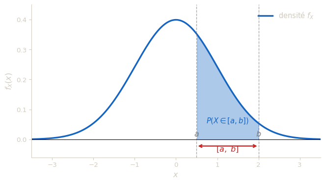
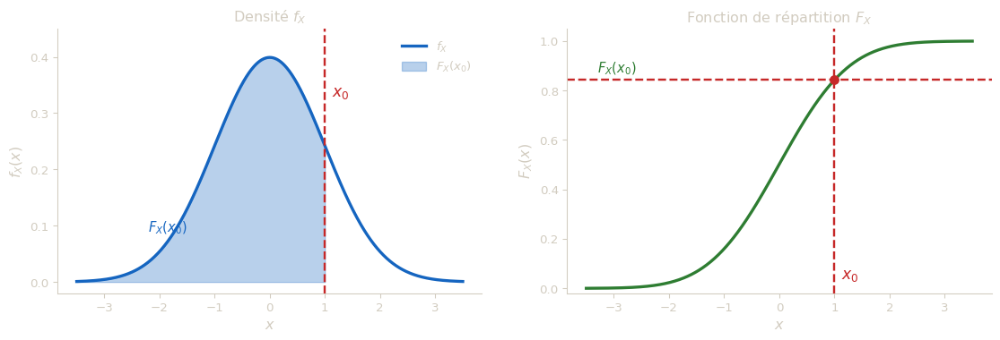
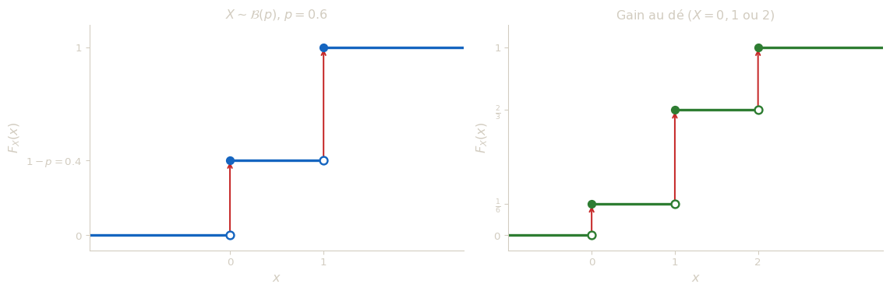
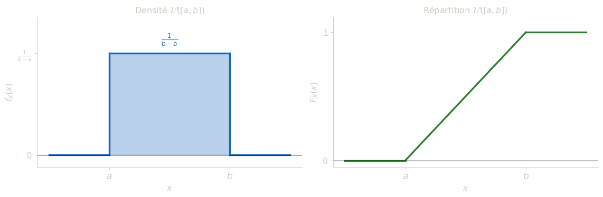
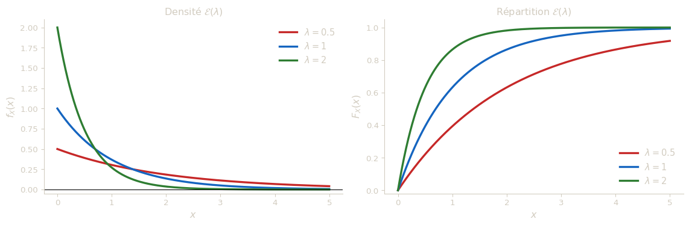
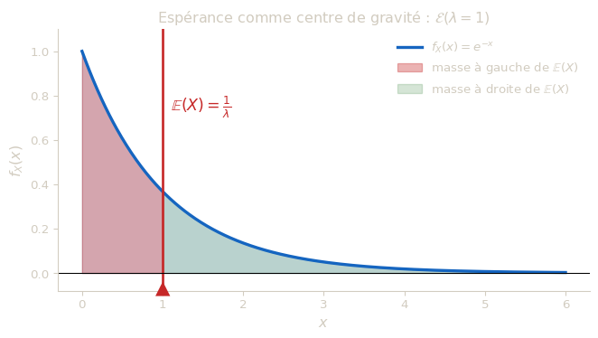
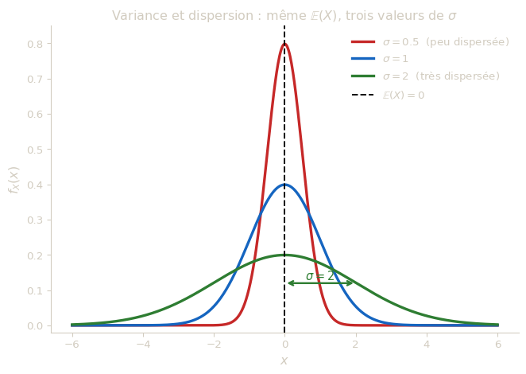

Lois à densité
Ce chapitre introduit les variables aléatoires absolument continues, qui modélisent des grandeurs pouvant prendre n’importe quelle valeur dans un intervalle — durées, distances, températures. Contrairement aux variables discrètes, la probabilité d’observer une valeur exacte est toujours nulle ; c’est la répartition de la probabilité sur des intervalles, décrite par une fonction densité, qui porte toute l’information. Après un rappel sur les intégrales généralisées (convergence, intégration par parties, changement de variable), outils indispensables au calcul des probabilités et des moments, on définit rigoureusement la densité de probabilité et la fonction de répartition, et on établit leur lien fondamental : dériver l’une redonne l’autre. Deux lois classiques sont présentées en détail — la loi uniforme (équiprobabilité sur un intervalle) et la loi exponentielle (modèle de durée sans mémoire) — avec leurs propriétés et leurs formules d’espérance et de variance. Le chapitre se conclut sur le calcul de l’espérance et de la variance au sens continu, via le théorème de transfert et la formule de König-Huygens, en établissant le parallèle systématique avec le cas discret. Les exercices sont intégrés au fil du cours, après chaque section correspondante.
📍 Retour à la carte du cours > Dans tout ce chapitre, nous nous plaçons dans un espace probabilisé quelconque \((\Omega, \mathcal{F}, P)\).
Rappels sur les intégrales généralisées
Soit \(f\) une fonction définie sur \(\mathbb{R}\), continue par morceaux (c.p.m.), et soit \(a \in \mathbb{R}\).
Définitions — Convergence
\(\displaystyle\int_a^{+\infty} f(t)\,dt\) converge si \(\displaystyle\lim_{X \to +\infty} \int_a^X f(t)\,dt\) est finie.
\(\displaystyle\int_{-\infty}^a f(t)\,dt\) converge si \(\displaystyle\lim_{X \to -\infty} \int_X^a f(t)\,dt\) est finie.
\(\displaystyle\int_{-\infty}^{+\infty} f(t)\,dt\) converge si et seulement s’il existe un réel \(a\) tel que \(\displaystyle\int_a^{+\infty} f(t)\,dt\) et \(\displaystyle\int_{-\infty}^a f(t)\,dt\) convergent toutes les deux.
L’idée fondamentale derrière ces définitions est qu’on ne sait pas calculer directement une intégrale sur un intervalle infini — l’infini n’est pas un nombre. On contourne cette difficulté en remplaçant la borne infinie par une borne finie \(X\), qu’on fait tendre vers l’infini. Si l’aire accumulée sous la courbe se stabilise lorsque \(X\) grandit indéfiniment, on dit que l’intégrale converge, et sa valeur est cette limite.
Pour \(\displaystyle\int_a^{+\infty} f(t)\,dt\), l’image à garder en tête est celle d’un explorateur qui avance vers la droite sur la courbe de \(f\) : à chaque pas, il accumule de l’aire. Si au bout d’un voyage infini il a accumulé une aire totale finie, l’intégrale converge. Dans le cas contraire (la quantité d’aire devient arbitrairement grande), elle diverge.
Pour \(\displaystyle\int_{-\infty}^{+\infty} f(t)\,dt\), il est crucial de séparer l’intégrale en deux parties distinctes et d’exiger la convergence de chacune indépendamment. En effet, si l’on permettait de faire tendre les deux bornes simultanément vers \(\pm\infty\), on pourrait créer des annulations artificielles entre des parties infinies de signe opposé : par exemple \(\displaystyle\lim_{X\to+\infty}\int_{-X}^X t\,dt = 0\) alors que l’intégrale de \(t\) sur \(\mathbb{R}\) diverge. La convergence simultanée des deux demi-droites garantit que la valeur obtenue est robuste et ne dépend pas du découpage choisi.
Dans le cadre des intégrales généralisées, les propriétés suivantes restent valables :
- linéarité de l’intégrale,
- intégration par parties,
- changement de variable.
Ces trois outils hérités du calcul intégral classique s’étendent sans difficulté aux intégrales généralisées à condition que les intégrales impliquées convergent. En pratique, on les applique d’abord sur un intervalle borné \([a, X]\), puis on passe à la limite \(X \to +\infty\) (ou \(X \to -\infty\)). La linéarité permet de décomposer des intégrales complexes en sommes plus simples ; l’intégration par parties transforme un produit difficile à intégrer directement ; le changement de variable permet de se ramener à une intégrale connue ou plus simple. Ces techniques seront systématiquement utilisées dans le calcul d’espérances et de variances en section III.
Calculer \(\displaystyle I = \int_0^{+\infty} e^{-4t}\,dt\).
À l’aide d’une intégration par parties, calculer \(\displaystyle J = \int_0^{+\infty} (x+1)e^{-x}\,dx\).
À l’aide du changement de variable \(u = \dfrac{1}{x}\), calculer \(\displaystyle K = \int_1^{+\infty} \frac{-1}{x^2 + x}\,dx\).
1. On calcule sur \([0, X]\) puis on passe à la limite : \[I = \lim_{X \to +\infty} \int_0^X e^{-4t}\,dt = \lim_{X \to +\infty} \left[-\frac{1}{4}e^{-4t}\right]_0^X = \lim_{X \to +\infty} \left(-\frac{1}{4}e^{-4X} + \frac{1}{4}\right) = \frac{1}{4}.\]
2. On pose \(u = x+1\) et \(dv = e^{-x}\,dx\), d’où \(du = dx\) et \(v = -e^{-x}\) : \[J = \lim_{X\to+\infty}\Bigl[-(x+1)e^{-x}\Bigr]_0^X + \int_0^{+\infty} e^{-x}\,dx.\] Or \(\lim_{X\to+\infty}(X+1)e^{-X} = 0\) (l’exponentielle l’emporte sur le polynôme), donc : \[J = \bigl(0 - (-(1))\bigr) + \Bigl[-e^{-x}\Bigr]_0^{+\infty} = 1 + \bigl(0-(-1)\bigr) = 1 + 1 = 2.\]
3. On pose \(u = \dfrac{1}{x}\), soit \(x = \dfrac{1}{u}\), \(dx = -\dfrac{1}{u^2}\,du\). Quand \(x=1\), \(u=1\) ; quand \(x\to+\infty\), \(u\to 0^+\). De plus : \[x^2 + x = \frac{1}{u^2} + \frac{1}{u} = \frac{1+u}{u^2}.\] Donc : \[K = \int_1^{+\infty} \frac{-1}{x^2+x}\,dx = \int_1^0 \frac{-u^2}{1+u}\cdot\frac{-1}{u^2}\,du = \int_1^0 \frac{1}{1+u}\,du = -\int_0^1 \frac{1}{1+u}\,du.\] \[K = -\Bigl[\ln(1+u)\Bigr]_0^1 = -(\ln 2 - \ln 1) = -\ln 2.\]
Exercice 1
Calculer chacune des intégrales suivantes. Préciser pour chacune la méthode utilisée (intégration par parties, changement de variable, etc.).
\(\displaystyle I = \int_0^1 x\ln(x)\,dx\)
\(\displaystyle J = \int_0^{+\infty} x^3 e^{-2x^2}\,dx\)
\(\displaystyle K = \int_1^{+\infty} \frac{2}{3x^2+x}\,dx\) (on pourra utiliser le changement de variable \(u = \tfrac{1}{x}\))
a. La présence simultanée d’un facteur polynomial (\(x\)) et d’un facteur logarithmique (\(\ln x\)) indique une intégration par parties. On choisit \(u = \ln(x)\) (dont la dérivée simplifie l’expression) et \(dv = x\,dx\) (facile à intégrer), d’où \(du = \frac{dx}{x}\) et \(v = \frac{x^2}{2}\).
\[I = \left[\frac{x^2}{2}\ln x\right]_0^1 - \int_0^1 \frac{x^2}{2}\cdot\frac{1}{x}\,dx = 0 - \int_0^1\frac{x}{2}\,dx = -\left[\frac{x^2}{4}\right]_0^1 = -\frac{1}{4}.\]
Le terme crochet vaut 0 en \(x=1\) (car \(\ln 1 = 0\)) et 0 en \(x \to 0^+\) car \(\lim_{x\to 0^+} x^2\ln x = 0\) par croissance comparée (le terme polynomial l’emporte sur le logarithme).
b. La présence de \(x^2\) dans l’exponentielle suggère le changement de variable \(u = x^2\), d’où \(du = 2x\,dx\). On peut alors écrire \(x^3\,dx = x^2 \cdot x\,dx = u \cdot \frac{du}{2}\), ce qui transforme l’intégrale en une forme standard :
\[J = \int_0^{+\infty} \frac{u}{2}e^{-2u}\,du.\]
Cette nouvelle intégrale contient un produit \(u \cdot e^{-2u}\), que l’on traite par intégration par parties (\(p = u\), \(dq = e^{-2u}du\)). Le terme crochet \(\left[-\frac{u}{2}e^{-2u}\right]_0^{+\infty}\) est nul (par croissance comparée), et il reste :
\[J = \frac{1}{2}\left(\left[-\frac{u}{2}e^{-2u}\right]_0^{+\infty} + \int_0^{+\infty}\frac{1}{2}e^{-2u}\,du\right) = \frac{1}{2}\cdot\frac{1}{2}\cdot\frac{1}{2} = \frac{1}{8}.\]
c. L’intégrande \(\frac{2}{3x^2+x}\) sur \([1, +\infty[\) pose problème en \(+\infty\). Le changement de variable \(u = \frac{1}{x}\) ramène l’intégrale sur \(]0,1]\), ce qui est plus maniable. On a \(x = \frac{1}{u}\), \(dx = -\frac{1}{u^2}du\), et les bornes s’inversent (\(x=1 \mapsto u=1\), \(x\to+\infty \mapsto u\to 0^+\)). Avec \(3x^2+x = \frac{3+u}{u^2}\) :
\[K = \int_0^1 \frac{2u}{3+u}\,du.\]
On effectue une division euclidéenne : \(\frac{2u}{3+u} = 2 - \frac{6}{3+u}\), ce qui donne une primitive immédiate :
\[K = 2\int_0^1\left(1 - \frac{3}{3+u}\right)du = 2\Big[u - 3\ln(3+u)\Big]_0^1 = 2 + 6\ln\!\tfrac{3}{4}.\]
Variables aléatoires réelles absolument continues
Densité de probabilité
Soit \(I\) un intervalle de \(\mathbb{R}\). On appelle fonction indicatrice (ou indicatrice) de \(I\) la fonction \(\mathbf{1}_I : \mathbb{R} \to \{0,1\}\) définie par : \[\mathbf{1}_I(x) = \begin{cases} 1 & \text{si } x \in I, \\ 0 & \text{sinon.} \end{cases}\]
Cette notation compacte sera utilisée tout au long du chapitre pour écrire les densités de probabilité : au lieu de définir une fonction par morceaux avec des accolades, on multiplie l’expression de la densité par \(\mathbf{1}_I(x)\), qui « active » la fonction uniquement sur l’intervalle \(I\) et l’annule partout ailleurs. Par exemple, écrire \(f(x) = \frac{1}{b-a}\,\mathbf{1}_{[a\,;\,b]}(x)\) signifie que \(f\) vaut \(\frac{1}{b-a}\) sur \([a, b]\) et \(0\) ailleurs.
Une densité de probabilité \(f\) sur \(\mathbb{R}\) est une fonction c.p.m., positive et telle que \[\int_{\mathbb{R}} f(x)\,dx = 1.\]
Une densité de probabilité est une façon de répartir l’unité de probabilité sur toute la droite réelle. L’axiome fondamental des probabilités exige que \(P(\Omega) = 1\) : quelque chose se produit forcément. Cette contrainte se traduit, pour une fonction densité, par l’égalité \(\int_{\mathbb{R}} f(x)\,dx = 1\) : toute l’aire sous la courbe de \(f\) vaut exactement 1.
La condition de positivité est tout aussi essentielle : une probabilité ne peut pas être négative. Si \(f\) prenait des valeurs négatives sur un intervalle, on obtiendrait \(P(X \in [a,b]) < 0\), ce qui est absurde. Notons que \(f(x)\) n’est pas une probabilité : c’est une densité, une probabilité par unité de longueur. Rien n’empêche \(f(x)\) d’être supérieure à 1 en un point — seule l’aire doit valoir 1.
Intuitivement, là où \(f\) est grande, les valeurs de \(X\) sont concentrées ; là où \(f\) est petite ou nulle, elles sont rares ou impossibles. La densité décrit donc la forme de la distribution, comme un relevé topographique décrit le relief d’un terrain.

Une variable aléatoire réelle (v.a.r.) \(X : \Omega \to \mathbb{R}\) est dite absolument continue1 s’il existe une densité de probabilité \(f_X\) telle que pour tout intervalle \([a\,;\,b] \subset \mathbb{R}\) : \[P(X \in [a\,;\,b]) = \int_a^b f_X(x)\,dx.\]
Cette densité est caractéristique de la loi de \(X\).
1 Une v.a.r. absolument continue est également appelée v.a.r. à densité.
Cette définition est le cœur de tout le chapitre. Elle établit un dictionnaire de traduction entre probabilités et intégrales : calculer la probabilité que \(X\) prenne une valeur dans \([a, b]\) revient à calculer l’aire sous la courbe de \(f_X\) entre \(a\) et \(b\).
Le terme absolument continue vient de la théorie de la mesure : il signifie que la loi de \(X\) ne charge aucun point isolé (contrairement aux lois discrètes). On peut comprendre cela intuitivement : une variable continue modélise une grandeur qui peut prendre n’importe quelle valeur dans un intervalle — une durée, une température, une taille — et la probabilité d’observer une valeur exacte est nulle (voir remarque ci-dessous).
Le fait que la densité soit caractéristique de la loi signifie que deux densités différentes donnent deux lois différentes, et réciproquement : connaître \(f_X\), c’est connaître parfaitement le comportement probabiliste de \(X\).
Pour tous réels \(a\) et \(b\) :
- \(P(X = a) = \displaystyle\int_a^a f_X(x)\,dx = 0\).
- \(P(X \in [a\,;\,b]) = P(X \in\, ]a\,;\,b]) = P(X \in [a\,;\,b[) = P(X \in\, ]a\,;\,b[)\).
La première remarque est à la fois surprenante et fondamentale : la probabilité qu’une variable aléatoire continue prenne une valeur exacte est nulle. Géométriquement, l’intégrale sur un intervalle de longueur nulle \([a, a]\) est nulle — un segment n’a pas d’aire. Probabilistiquement, cela reflète le fait que les variables continues modélisent des grandeurs physiques mesurées avec une précision finie : dire qu’un individu mesure exactement \(1{,}75000\ldots\) m (avec infiniment de décimales) est un événement impossible.
La deuxième remarque en découle immédiatement : puisque les extrémités \(a\) et \(b\) ont une probabilité nulle, les ouvrir ou les fermer ne change rien à la valeur de l’intégrale. C’est une différence majeure avec le cas discret, où \(P(X \leq a)\) et \(P(X < a)\) peuvent être différents.
Fonction de répartition
La fonction de répartition de la v.a.r. \(X\) de densité \(f_X\) est la fonction \(F_X : \mathbb{R} \to [0\,;\,1]\) définie par : \[F_X(x) = P(X \leq x) = \int_{-\infty}^x f_X(t)\,dt.\]
La fonction de répartition est un outil universel : elle s’applique à toutes les variables aléatoires, discrètes comme continues. Elle répond à la question naturelle : quelle est la probabilité que \(X\) soit inférieure ou égale à \(x\) ?
Pour une v.a.r. à densité, \(F_X(x)\) est l’aire sous la courbe de \(f_X\) de \(-\infty\) jusqu’à \(x\). On peut la voir comme une primitive de \(f_X\) : elle accumule progressivement la probabilité de gauche à droite, comme un réservoir qui se remplit. Plus \(x\) augmente, plus on balaye de terrain, et plus \(F_X(x)\) augmente.
La variable d’intégration est notée \(t\) (et non \(x\)) pour éviter toute confusion avec la borne supérieure d’intégration \(x\) : \(t\) est une variable muette qui disparaît après le calcul.
La fonction de répartition \(F_X\) d’une v.a.r. à densité est croissante et continue sur \(\mathbb{R}\), et vérifie : \[\lim_{x \to -\infty} F_X(x) = 0 \qquad \text{et} \qquad \lim_{x \to +\infty} F_X(x) = 1.\]
De plus, pour tout intervalle \([a\,;\,b] \subset \mathbb{R}\) : \[P(X \in [a\,;\,b]) = F_X(b) - F_X(a).\]
Ces propriétés ont toutes une explication intuitive claire.
Croissance : si \(x_1 < x_2\), alors l’événement \(\{X \leq x_1\}\) est inclus dans \(\{X \leq x_2\}\) ; donc \(F_X(x_1) \leq F_X(x_2)\). En termes d’intégrale, on accumule plus d’aire en allant plus loin à droite.
Continuité : c’est une propriété propre aux v.a.r. à densité, qui les distingue des v.a. discrètes. Elle est garantie par le fait que \(F_X\) est une intégrale (donc une fonction différentiable presque partout), et que les points isolés n’ont aucun poids.
Limites : \(\lim_{x\to-\infty} F_X(x) = 0\) signifie qu’il est impossible que \(X\) prenne une valeur infiniment petite — l’événement \(\{X \leq -\infty\}\) est vide. À l’opposé, \(\lim_{x\to+\infty} F_X(x) = 1\) traduit la certitude : \(X\) prend nécessairement une valeur finie quelque part sur \(\mathbb{R}\), et toute la probabilité est contenue dans \(\mathbb{R}\).
Formule de l’intervalle \(P(X \in [a,b]) = F_X(b) - F_X(a)\) : c’est la conséquence directe du théorème fondamental de l’analyse. Puisque \(F_X\) est une primitive de \(f_X\), on a : \[\int_a^b f_X(x)\,dx = F_X(b) - F_X(a).\] En pratique, cette formule est extraordinairement utile : pour calculer une probabilité sur un intervalle, il suffit de deux évaluations de \(F_X\), sans avoir à recalculer une intégrale.

La fonction de répartition d’une variable aléatoire continue détermine entièrement sa loi.
Ce résultat signifie que \(F_X\) contient autant d’information que \(f_X\) : connaître l’une permet de retrouver l’autre (par dérivation, voir section 4). Deux variables aléatoires ayant la même fonction de répartition ont la même loi, c’est-à-dire la même distribution des probabilités.
Soit \(a\) un réel strictement positif et soit \(f\) la fonction définie sur \(\mathbb{R}\) par \(f(x) = a x^2 \cdot \mathbf{1}_{[0\,;\,2]}(x)\), où \(\mathbf{1}_{[0\,;\,2]}(x) = 1\) si \(x \in [0\,;\,2]\), \(0\) sinon.
- Déterminer la valeur de \(a\) pour laquelle \(f\) est une densité de probabilité sur \(\mathbb{R}\).
- \(X\) est une variable aléatoire de densité \(f\).
- Calculer \(P(X < 1{,}5)\).
- Déterminer la fonction de répartition \(F_X\).
1. \(f\) est positive (car \(a > 0\) et \(x^2 \geq 0\)) et continue par morceaux. Il reste à imposer \(\int_\mathbb{R} f(x)\,dx = 1\) : \[\int_\mathbb{R} f(x)\,dx = \int_0^2 ax^2\,dx = a\left[\frac{x^3}{3}\right]_0^2 = a \cdot \frac{8}{3}.\] Donc \(a \cdot \frac{8}{3} = 1\), d’où \(\boxed{a = \dfrac{3}{8}}\).
2a. Puisque \(1{,}5 \in [0\,;\,2]\) et que \(f\) est nulle sur \(]-\infty\,;\,0[\) : \[P(X < 1{,}5) = \int_0^{1{,}5} \frac{3}{8}x^2\,dx = \frac{3}{8}\left[\frac{x^3}{3}\right]_0^{1{,}5} = \frac{1}{8}(1{,}5)^3 = \frac{1}{8}\cdot\frac{27}{8} = \frac{27}{64}.\]
2b. On distingue trois cas :
Si \(x < 0\) : \(F_X(x) = \int_{-\infty}^x 0\,dt = 0\).
Si \(0 \leq x \leq 2\) : \(F_X(x) = \int_0^x \frac{3}{8}t^2\,dt = \frac{3}{8}\left[\frac{t^3}{3}\right]_0^x = \dfrac{x^3}{8}\).
Si \(x > 2\) : \(F_X(x) = 1\) (toute la probabilité a été accumulée).
On vérifie la continuité en \(x=2\) : \(\dfrac{2^3}{8} = 1\) ✓. Donc : \[F_X(x) = \begin{cases} 0 & \text{si } x < 0, \\ \dfrac{x^3}{8} & \text{si } 0 \leq x \leq 2, \\ 1 & \text{si } x > 2. \end{cases}\]
Soit \(X\) une variable aléatoire suivant la loi \(\mathcal{B}(p)\) avec \(p \in\, ]0\,;\,1[\). Déterminer la fonction de répartition de \(X\) et tracer sa représentation graphique.
On lance un dé équilibré à six faces. On réalise un gain nul si l’on obtient 1, un gain de \(1\)€ si l’on obtient 2, 3 ou 4, et un gain de \(2\)€ si le résultat est 5 ou 6. On note \(X\) la variable aléatoire égale au gain obtenu.
- Déterminer la loi de \(X\).
- Déterminer la fonction de répartition de \(X\) et tracer sa représentation graphique.
Expliquer pourquoi, dans chacune des situations précédentes, \(X\) n’est pas une variable aléatoire à densité.
1. \(X \sim \mathcal{B}(p)\) prend les valeurs \(0\) et \(1\) avec \(P(X=0) = 1-p\) et \(P(X=1) = p\).
\[F_X(x) = \begin{cases} 0 & \text{si } x < 0, \\ 1-p & \text{si } 0 \leq x < 1, \\ 1 & \text{si } x \geq 1. \end{cases}\]
C’est une fonction en escalier avec deux paliers, présentant des sauts en \(x=0\) (hauteur \(1-p\)) et en \(x=1\) (hauteur \(p\)).
2a. Les résultats \(\{5, 6\}\) donnent \(X=2\) (2 faces sur 6), \(\{2,3,4\}\) donnent \(X=1\) (3 faces), et \(\{1\}\) donne \(X=0\) (1 face) :
| \(k\) | \(0\) | \(1\) | \(2\) |
|---|---|---|---|
| \(P(X=k)\) | \(\dfrac{1}{6}\) | \(\dfrac{1}{2}\) | \(\dfrac{1}{3}\) |
2b.
\[F_X(x) = \begin{cases} 0 & \text{si } x < 0, \\ \dfrac{1}{6} & \text{si } 0 \leq x < 1, \\ \dfrac{2}{3} & \text{si } 1 \leq x < 2, \\ 1 & \text{si } x \geq 2. \end{cases}\]
3. Dans les deux cas, \(F_X\) n’est pas continue sur \(\mathbb{R}\) : elle présente des sauts aux valeurs prises par \(X\). Or une v.a.r. à densité possède nécessairement une fonction de répartition continue (car \(F_X\) est alors une primitive de \(f_X\), donc continue). Ces variables aléatoires discrètes ne peuvent donc pas être à densité.

Dans le cas discret, la fonction de répartition n’est pas continue sur \(\mathbb{R}\) ; elle est cependant continue à droite.
La discontinuité de \(F_X\) dans le cas discret est précisément ce qui distingue les deux types de variables. Pour une v.a. discrète, la probabilité se concentre en des points isolés, créant des sauts dans la fonction de répartition : la hauteur du saut en \(x_0\) vaut exactement \(P(X = x_0)\). Si \(X\) était à densité, ces sauts seraient tous nuls, et \(F_X\) serait continue.
Exercice 2
Vérifier que chacune de ces fonctions est une fonction de répartition d’une v.a.r. \(X\), déterminer si \(X\) est discrète ou absolument continue, et donner sa loi.
a) \[F(x) = \begin{cases} 0 & \text{si } x < 0 \\ \tfrac{1}{4} & \text{si } 0 \leq x < 1 \\ \tfrac{3}{4} & \text{si } 1 \leq x < 2 \\ 1 & \text{si } x \geq 2 \end{cases}\]
b) \[F(x) = \begin{cases} 0 & \text{si } x < 1 \\ \dfrac{x-1}{4} & \text{si } 1 \leq x \leq 5 \\ 1 & \text{si } x > 5 \end{cases}\]
Une fonction de répartition doit être croissante, continue à droite, tendre vers 0 en \(-\infty\) et vers 1 en \(+\infty\).
a. \(F\) est croissante, continue à droite, avec \(\lim_{-\infty} F = 0\) et \(\lim_{+\infty} F = 1\) : c’est bien une fonction de répartition. Elle n’est pas continue (sauts en \(x=0\), \(x=1\) et \(x=2\)), donc \(X\) est discrète. La hauteur de chaque saut donne directement la probabilité de la valeur correspondante :
\[P(X=0) = \frac{1}{4},\quad P(X=1) = \frac{1}{2},\quad P(X=2) = \frac{1}{4}.\]
b. \(F\) est croissante, continue sur \(\mathbb{R}\), nulle à \(-\infty\) et égale à 1 à \(+\infty\) : c’est une fonction de répartition. Elle est continue et dérivable sur \(]1;5[\), donc \(X\) est absolument continue (loi à densité). On obtient la densité en dérivant \(F\) :
\[f(x) = F'(x) = \frac{1}{4}\,\mathbf{1}_{[1;5]}(x).\]
La densité est constante sur \([1;5]\) avec \(f(x) = \frac{1}{5-1} = \frac{1}{4}\), ce qui est la signature d’une loi uniforme : \(X \sim \mathcal{U}([1;5])\).
Lois à densité classiques
Loi uniforme sur \([a\,;\,b]\)
Dire qu’une v.a.r. \(X\) suit la loi uniforme sur \([a\,;\,b]\) (noté \(X \sim \mathcal{U}([a\,;\,b])\)) signifie qu’elle admet pour densité : \[f_X(x) = \frac{1}{b-a}\,\mathbf{1}_{[a\,;\,b]}(x).\]
Sa fonction de répartition est : \[F_X(x) = \begin{cases} 0 & \text{si } x < a, \\ \dfrac{x-a}{b-a} & \text{si } a \leq x \leq b, \\ 1 & \text{si } x > b. \end{cases}\]
La loi uniforme est la loi de l’équiprobabilité continue : elle modélise une situation où aucune valeur de l’intervalle \([a, b]\) n’est favorisée par rapport aux autres. La densité est donc constante sur \([a, b]\), et nulle en dehors.
La valeur \(\frac{1}{b-a}\) de cette constante s’impose naturellement : pour que l’aire totale du rectangle de base \((b-a)\) et de hauteur \(h\) vaille 1, il faut \(h \times (b-a) = 1\), soit \(h = \frac{1}{b-a}\). Plus l’intervalle est large, plus la densité est faible : la probabilité est “diluée” sur un grand intervalle. À l’inverse, un intervalle court concentre la densité en une valeur élevée.
Pour la fonction de répartition : avant \(a\), aucune probabilité n’a été accumulée (\(X\) ne peut pas être inférieure à \(a\)), donc \(F_X(x) = 0\). Après \(b\), toute la probabilité a été accumulée, donc \(F_X(x) = 1\). Entre \(a\) et \(b\), la probabilité s’accumule linéairement : la quantité \(\frac{x-a}{b-a}\) représente la fraction de l’intervalle \([a, b]\) déjà parcourue depuis \(a\). Lorsque \(x = a\), cette fraction vaut 0 ; lorsque \(x = b\), elle vaut 1.
Il s’agit de calculer \(F_X(x) = \displaystyle\int_{-\infty}^x f_X(t)\,dt\) avec \(f_X(t) = \frac{1}{b-a}\,\mathbf{1}_{[a\,;\,b]}(t)\).
Si \(x < a\) : la densité est nulle sur \(]-\infty\,;\,x]\), donc \(F_X(x) = 0\).
Si \(a \leq x \leq b\) : seule la partie de \([a\,;\,x]\) contribue à l’intégrale : \[F_X(x) = \int_a^x \frac{1}{b-a}\,dt = \frac{x-a}{b-a}.\]
Si \(x > b\) : toute la densité a été intégrée : \[F_X(x) = \int_a^b \frac{1}{b-a}\,dt = \frac{b-a}{b-a} = 1.\]
Vérification : \(F_X\) est continue, croissante, \(F_X(a) = 0\), \(F_X(b) = 1\) ✓.

Dans un supermarché un jour de grande affluence, le temps d’attente \(T\) à la caisse (en minutes) suit la loi uniforme sur \([2\,;\,20]\).
- Définir la densité de probabilité \(f\) de la loi de \(T\).
- Quelle est la probabilité que le temps d’attente soit inférieur à un quart d’heure ?
1. \(T \sim \mathcal{U}([2\,;\,20])\), donc sa densité est la fonction constante sur \([2\,;\,20]\) de valeur \(\dfrac{1}{20-2} = \dfrac{1}{18}\) : \[f(t) = \frac{1}{18}\,\mathbf{1}_{[2\,;\,20]}(t).\]
2. Un quart d’heure correspond à \(15\) minutes. Puisque \(15 \in [2\,;\,20]\) : \[P(T < 15) = \int_2^{15} \frac{1}{18}\,dt = \frac{15 - 2}{18} = \frac{13}{18} \approx 72{,}2\%.\]
Loi exponentielle de paramètre \(\lambda > 0\)
Dire qu’une v.a.r. \(X\) suit la loi exponentielle de paramètre \(\lambda\) (noté \(X \sim \mathcal{E}(\lambda)\)) signifie qu’elle admet pour densité : \[f_X(x) = \lambda e^{-\lambda x}\,\mathbf{1}_{[0\,;\,+\infty[}(x).\]
Sa fonction de répartition est : \[F_X(x) = \begin{cases} 1 - e^{-\lambda x} & \text{si } x \geq 0, \\ 0 & \text{si } x < 0. \end{cases}\]
La loi exponentielle est la loi de l’attente sans mémoire : elle modélise le temps qui s’écoule entre deux événements dans un processus de Poisson (pannes d’une machine, arrivées de clients, désintégrations radioactives, etc.). Sa caractéristique fondamentale — appelée propriété d’absence de mémoire — est que si l’on sait que l’événement ne s’est pas encore produit, cela ne change pas la distribution du temps d’attente restant.
Dans la densité \(f_X(x) = \lambda e^{-\lambda x}\), le facteur \(\lambda\) joue deux rôles :
- Il assure la normalisation : \(\int_0^{+\infty} \lambda e^{-\lambda x}\,dx = 1\).
- Il contrôle la vitesse de décroissance. Un grand \(\lambda\) signifie que les événements sont fréquents : la densité décroît vite, les longues attentes sont très peu probables. Un petit \(\lambda\) correspond à des événements rares : la densité décroît lentement, des attentes longues sont plausibles.
La densité est nulle sur \(]-\infty, 0[\) car on modélise un temps d’attente : il ne peut pas être négatif.
Pour la fonction de répartition : \(F_X(x) = 1 - e^{-\lambda x}\) pour \(x \geq 0\). On peut la lire comme la probabilité que l’événement se soit déjà produit avant l’instant \(x\). Lorsque \(x \to +\infty\), \(e^{-\lambda x} \to 0\) et \(F_X(x) \to 1\) : l’événement finit toujours par se produire. La dérivée de \(F_X\) redonne bien \(f_X\) : \(F_X'(x) = \lambda e^{-\lambda x}\).
Il s’agit de calculer \(F_X(x) = \displaystyle\int_{-\infty}^x f_X(t)\,dt\) avec \(f_X(t) = \lambda e^{-\lambda t}\,\mathbf{1}_{[0\,;\,+\infty[}(t)\).
Si \(x < 0\) : la densité est nulle sur \(]-\infty\,;\,x]\), donc \(F_X(x) = 0\).
Si \(x \geq 0\) : \[F_X(x) = \int_0^x \lambda e^{-\lambda t}\,dt = \left[-e^{-\lambda t}\right]_0^x = -e^{-\lambda x} + 1 = 1 - e^{-\lambda x}.\]
Vérification : \(F_X(0) = 0\) ✓, \(\lim_{x\to+\infty}F_X(x) = 1\) ✓, et \(F_X'(x) = \lambda e^{-\lambda x} = f_X(x)\) pour \(x > 0\) ✓.

Soit \(X \sim \mathcal{E}(2)\). Calculer \(P(X \geq 1)\), \(P(X = 1)\), \(P(X < 1)\), \(P(-1 \leq X \leq 3)\) et \(P(X \leq -1)\).
Pour \(X \sim \mathcal{E}(2)\), on dispose de \(F_X(x) = 1 - e^{-2x}\) pour \(x \geq 0\), et \(F_X(x) = 0\) pour \(x < 0\).
\(P(X \geq 1) = 1 - F_X(1) = 1 - (1-e^{-2}) = e^{-2} \approx 0{,}135\).
\(P(X = 1) = 0\) : toute variable aléatoire à densité attribue une probabilité nulle à tout point isolé.
\(P(X < 1) = F_X(1) = 1 - e^{-2} \approx 0{,}865\).
\(P(-1 \leq X \leq 3) = F_X(3) - F_X(-1)\). Or \(F_X(-1) = 0\) car \(-1 < 0\), et \(F_X(3) = 1 - e^{-6}\). Donc : \[P(-1 \leq X \leq 3) = 1 - e^{-6} \approx 0{,}998.\]
\(P(X \leq -1) = F_X(-1) = 0\) : \(X\) modélise un temps d’attente, elle ne peut être négative.
D’autres lois à densité seront étudiées en TD et dans le prochain chapitre.
Lien entre densité et fonction de répartition
Soit \(X\) une variable aléatoire réelle. Si la fonction de répartition \(F_X\) est dérivable presque partout, alors \(X\) est une v.a.r. à densité et : \[F_X'(x) = f_X(x).\]
Cette proposition est une application directe du théorème fondamental de l’analyse aux variables aléatoires : si \(F_X(x) = \int_{-\infty}^x f_X(t)\,dt\) est une primitive de \(f_X\), alors sa dérivée redonne \(f_X\).
La formule \(F_X' = f_X\) établit une réciprocité entre les deux objets centraux du chapitre :
- De la densité à la fonction de répartition : on intègre — \(F_X(x) = \int_{-\infty}^x f_X(t)\,dt\).
- De la fonction de répartition à la densité : on dérive — \(f_X(x) = F_X'(x)\).
La précision “presque partout” est importante : on tolère que \(F_X\) ne soit pas dérivable en un nombre fini de points (par exemple aux jonctions d’une densité définie par morceaux). En ces points, la valeur de la densité est sans importance pour le calcul des probabilités, car une intégrale est insensible à la valeur d’une fonction en un nombre fini de points.
En pratique, cette dualité est extrêmement utile. Parfois la densité est connue et on cherche \(F_X\) (par intégration) ; parfois c’est \(F_X\) qui est donnée et on cherche \(f_X\) (par dérivation). Les exemples 2 et 6 illustrent ces deux directions.
Soit \(X\) une variable aléatoire continue de fonction de répartition : \[F_X(x) = \begin{cases} 0 & \text{si } x < 1, \\ 1 - \dfrac{1}{x} & \text{si } x \geq 1. \end{cases}\] Déterminer une densité de \(X\).
Soit \(Y\) une variable aléatoire continue de densité : \[f_Y(x) = \begin{cases} 0 & \text{si } x \leq 0, \\ \dfrac{1}{4\sqrt{x}} & \text{si } 0 < x < 1, \\ \dfrac{1}{2x^2} & \text{si } x \geq 1. \end{cases}\] Déterminer la fonction de répartition \(F_Y\) de \(Y\).
1. \(F_X\) est dérivable sur \(]-\infty\,;\,1[\) (où elle vaut 0) et sur \(]1\,;\,+\infty[\) (où elle vaut \(1 - 1/x\)). On dérive : \[f_X(x) = F_X'(x) = \frac{1}{x^2}\quad\text{pour }x > 1,\qquad f_X(x) = 0\quad\text{pour }x < 1.\]
Une densité de \(X\) est donc \(f_X(x) = \dfrac{1}{x^2}\,\mathbf{1}_{[1\,;\,+\infty[}(x)\).
Vérification : \(f_X \geq 0\) ✓ et \(\displaystyle\int_1^{+\infty}\frac{1}{x^2}\,dx = \left[-\frac{1}{x}\right]_1^{+\infty} = 0 - (-1) = 1\) ✓.
2. On intègre \(f_Y\) par morceaux :
Pour \(x \leq 0\) : \(F_Y(x) = 0\).
Pour \(0 < x < 1\) : \[F_Y(x) = \int_0^x \frac{1}{4\sqrt{t}}\,dt = \frac{1}{4}\Bigl[2\sqrt{t}\Bigr]_0^x = \frac{\sqrt{x}}{2}.\]
Pour \(x \geq 1\) : on accumule la probabilité déjà obtenue en \(x=1\), puis on intègre \(f_Y\) sur \([1\,;\,x]\). Or \(F_Y(1) = \frac{\sqrt{1}}{2} = \frac{1}{2}\), et : \[F_Y(x) = \frac{1}{2} + \int_1^x \frac{1}{2t^2}\,dt = \frac{1}{2} + \frac{1}{2}\left[-\frac{1}{t}\right]_1^x = \frac{1}{2} + \frac{1}{2}\!\left(1-\frac{1}{x}\right) = 1 - \frac{1}{2x}.\]
Vérification : \(F_Y\) est continue en \(x=1\) (les deux expressions donnent \(1/2\)) ✓, et \(\lim_{x\to+\infty}F_Y(x) = 1\) ✓.
\[F_Y(x) = \begin{cases} 0 & \text{si } x \leq 0, \\ \dfrac{\sqrt{x}}{2} & \text{si } 0 < x < 1, \\ 1 - \dfrac{1}{2x} & \text{si } x \geq 1. \end{cases}\]
Exercice 3
Soit \(f\) la fonction définie sur \(\mathbb{R}\) par : \[f(x) = \begin{cases} 0 & \text{si } x < -1 \text{ ou } x > 1 \\ x+1 & \text{si } -1 \leq x < 0 \\ -x+1 & \text{si } 0 \leq x \leq 1 \end{cases}\]
- Montrer que \(f\) est une densité de probabilité et déterminer la fonction de répartition \(F\) de \(X\).
- Calculer \(\mathbb{E}(X)\) et \(\mathrm{Var}(X)\).
- Déterminer \(P(|X| > 0{,}5)\).
1. Pour montrer que \(f\) est une densité, on vérifie deux conditions : \(f \geq 0\) (évident par construction, chaque morceau est positif sur son domaine) et \(\int_\mathbb{R} f = 1\).
\[\int_{-1}^0 (x+1)\,dx + \int_0^1 (-x+1)\,dx = \frac{1}{2} + \frac{1}{2} = 1.\]
Chaque intégrale vaut \(\frac{1}{2}\) (aire d’un triangle de base 1 et de hauteur 1). La fonction \(f\) représente une loi triangulaire symétrique sur \([-1;1]\).
La fonction de répartition s’obtient en intégrant \(f\) sur chaque morceau :
- \(x < -1\) : \(F(x) = 0\).
- \(-1 \leq x < 0\) : \(F(x) = \int_{-1}^x (t+1)\,dt = \dfrac{(x+1)^2}{2}\).
- \(0 \leq x \leq 1\) : \(F(x) = \frac{1}{2} + \int_0^x (-t+1)\,dt = 1 - \dfrac{(x-1)^2}{2}\).
- \(x > 1\) : \(F(x) = 1\).
2. La densité \(f\) est symétrique par rapport à \(0\) (i.e. \(f(-x) = f(x)\)), ce qui implique immédiatement \(\mathbb{E}(X) = 0\) sans calcul.
Pour la variance, \(\mathrm{Var}(X) = \mathbb{E}(X^2)\) (puisque \(\mathbb{E}(X)=0\)). Par symétrie, on peut doubler l’intégrale sur \([0;1]\) :
\[\mathbb{E}(X^2) = 2\int_0^1 x^2(-x+1)\,dx = 2\left[\frac{x^3}{3}-\frac{x^4}{4}\right]_0^1 = 2\left(\frac{1}{3}-\frac{1}{4}\right) = \frac{1}{6}.\]
Donc \(\mathrm{Var}(X) = \dfrac{1}{6}\).
3. On utilise la complémentarité et la formule \(P(a < X < b) = F(b) - F(a)\). L’événement \(\{|X| > 0{,}5\}\) est le complémentaire de \(\{-0{,}5 \leq X \leq 0{,}5\}\) :
\[P(|X| > 0{,}5) = 1 - P(-0{,}5 \leq X \leq 0{,}5) = 1 - (F(0{,}5) - F(-0{,}5)) = 1 - \left(\frac{7}{8} - \frac{1}{8}\right) = \frac{1}{4}.\]
Exercice 4
Soit \(f(x) = k(1-x^4)\,\mathbf{1}_{[-1;\,1]}(x)\).
- Déterminer \(k\) pour que \(f\) soit une densité de probabilité d’une v.a.r. \(X\).
- Déterminer la fonction de répartition de \(X\).
- Calculer \(P(-0{,}5 < X < 2)\) et \(P(|X| < 0{,}1)\).
- Calculer \(\mathbb{E}(X)\) et \(\mathrm{Var}(X)\).
1. Pour que \(f\) soit une densité, il faut \(k > 0\) (pour assurer \(f \geq 0\) sur \([-1;1]\), où \(1-x^4 \geq 0\)) et \(\int_{-1}^1 f(x)\,dx = 1\). Par parité de \(1-x^4\) :
\[\int_{-1}^1 k(1-x^4)\,dx = 2k\int_0^1(1-x^4)\,dx = 2k\left[x - \frac{x^5}{5}\right]_0^1 = 2k\cdot\frac{4}{5} = \frac{8k}{5}.\]
Donc \(k = \dfrac{5}{8}\).
2. La fonction de répartition s’obtient en intégrant \(f\) depuis \(-1\) :
\[F(x) = \int_{-1}^x \frac{5}{8}(1-t^4)\,dt = \frac{5}{8}\left[t - \frac{t^5}{5}\right]_{-1}^x = \frac{5}{8}\left(x - \frac{x^5}{5} + 1 - \frac{-1}{5}\right) = \frac{5x - x^5 + 4}{8}.\]
\[F(x) = \begin{cases} 0 & x < -1 \\ \dfrac{5x - x^5 + 4}{8} & -1 \leq x \leq 1 \\ 1 & x > 1 \end{cases}\]
3. On utilise \(P(a < X < b) = F(b) - F(a)\). Comme \(X \in [-1;1]\), la valeur \(x=2\) n’est pas dans le support : \(F(2) = 1\).
\(P(-0{,}5 < X < 2) = F(1) - F(-0{,}5) = 1 - \frac{5(-0{,}5)-(-0{,}5)^5+4}{8} \approx 0{,}810.\)
\(P(|X| < 0{,}1) = F(0{,}1) - F(-0{,}1) \approx \frac{1}{8} = 0{,}125.\) (La densité vaut presque \(\frac{5}{8}\) près de 0, et l’intervalle a longueur 0,2, d’où \(\approx 0{,}125\).)
4. La densité \(f(x) = \frac{5}{8}(1-x^4)\) est paire (symétrique en 0), donc \(\mathbb{E}(X) = 0\) par symétrie. Pour la variance (\(=\mathbb{E}(X^2)\)) :
\[\mathbb{E}(X^2) = \int_{-1}^1 x^2 \cdot \frac{5}{8}(1-x^4)\,dx = \frac{5}{4}\int_0^1 x^2(1-x^4)\,dx = \frac{5}{4}\left[\frac{x^3}{3}-\frac{x^7}{7}\right]_0^1 = \frac{5}{4}\cdot\frac{4}{21} = \frac{5}{21}.\]
Donc \(\mathrm{Var}(X) = \dfrac{5}{21}.\)
Espérance et variance d’une variable aléatoire à densité
Espérance
Soit \(X\) une v.a.r. de densité \(f_X\).
\(X\) est dite intégrable lorsque \(\displaystyle\int_{\mathbb{R}} |x|\,f_X(x)\,dx\) converge.
Dans ce cas, on appelle espérance de \(X\) le réel : \[\mathbb{E}(X) = \int_{\mathbb{R}} x\,f_X(x)\,dx.\]
L’espérance est la valeur moyenne de \(X\) : si l’on répétait l’expérience un très grand nombre de fois et qu’on calculait la moyenne des valeurs observées, on obtiendrait une valeur proche de \(\mathbb{E}(X)\) (c’est la loi des grands nombres). C’est aussi le centre de gravité de la distribution : si l’on plaçait la courbe de \(f_X\) sur un axe horizontal et qu’on cherchait le point d’équilibre, ce serait \(\mathbb{E}(X)\).
La formule \(\mathbb{E}(X) = \int_{\mathbb{R}} x\,f_X(x)\,dx\) est le passage naturel de la somme discrète \(\sum_k x_k P(X = x_k)\) au continu. On pondère chaque valeur possible \(x\) par son “poids infinitésimal” \(f_X(x)\,dx\), qui représente la probabilité que \(X\) soit dans le petit intervalle \([x, x+dx]\).
La condition d’intégrabilité \(\int_{\mathbb{R}} |x|\,f_X(x)\,dx < +\infty\) est indispensable pour que \(\mathbb{E}(X)\) soit bien définie. Sans elle, l’intégrale \(\int_{\mathbb{R}} x\,f_X(x)\,dx\) pourrait ne pas converger, ou donner une valeur qui dépend de l’ordre d’intégration. On exige la convergence absolue (avec \(|x|\) au lieu de \(x\)) pour garantir la stabilité du résultat. Il existe des distributions célèbres, comme la loi de Cauchy, qui ont une densité parfaitement régulière mais dont l’espérance n’existe pas — parce que les queues de la distribution sont trop lourdes.
| \(P(X \in A)\) | \(\mathbb{E}(X)\) | |
|---|---|---|
| \(X\) discrète | \(\displaystyle\sum_{x \in A} P(X=x)\) | \(\displaystyle\sum_{x \in X(\Omega)} x\,P(X=x)\) |
| \(X\) absolument continue | \(\displaystyle\int_a^b f_X(x)\,dx\) | \(\displaystyle\int_{\mathbb{R}} x\,f_X(x)\,dx\) |
Ce tableau met en évidence la symétrie profonde entre les deux mondes. Le passage du discret au continu remplace la somme sur les valeurs possibles par une intégrale, et la probabilité ponctuelle \(P(X = x)\) par la densité \(f_X(x)\,dx\) — la masse infinitésimale portée par l’intervalle \([x, x+dx]\). Toutes les formules du cas discret ont un analogue intégral dans le cas continu, et les intuitions se transfèrent directement.

- Démontrer que la variable aléatoire \(X\) de l’exemple 6 n’admet pas d’espérance.
- Soit \(Y\) une variable aléatoire continue de densité \(f_Y(x) = e^{-x}\,\mathbf{1}_{[0\,;\,+\infty[}(x)\). \(Y\) admet-elle une espérance ? Si oui, la calculer.
1. La densité de \(X\) (exemple 6) est \(f_X(x) = \dfrac{1}{x^2}\,\mathbf{1}_{[1\,;\,+\infty[}(x)\). On teste l’intégrabilité : \[\int_\mathbb{R} |x|\,f_X(x)\,dx = \int_1^{+\infty} x \cdot \frac{1}{x^2}\,dx = \int_1^{+\infty} \frac{1}{x}\,dx = \lim_{M\to+\infty}\ln M = +\infty.\] L’intégrale diverge : \(X\) n’est pas intégrable, et n’admet donc pas d’espérance.
2. La densité \(f_Y(x) = e^{-x}\,\mathbf{1}_{[0\,;\,+\infty[}(x)\) est celle de la loi \(\mathcal{E}(1)\). Vérifions l’intégrabilité : \[\int_0^{+\infty} x\,e^{-x}\,dx < +\infty\quad\text{(l'exponentielle l'emporte sur tout polynôme)}.\] On calcule par une intégration par parties avec \(u = x\), \(dv = e^{-x}\,dx\) : \[\mathbb{E}(Y) = \int_0^{+\infty} x\,e^{-x}\,dx = \Bigl[-xe^{-x}\Bigr]_0^{+\infty} + \int_0^{+\infty} e^{-x}\,dx = 0 + \Bigl[-e^{-x}\Bigr]_0^{+\infty} = 0-(-1) = 1.\]
\(Y\) admet une espérance et \(\mathbb{E}(Y) = 1\), ce qui est cohérent avec \(Y \sim \mathcal{E}(1)\) et la formule \(\mathbb{E} = 1/\lambda\).
Soit \(X\) une v.a.r. de densité \(f_X\), et \(h\) une fonction c.p.m. sur \(\mathbb{R}\) telle que \(h(X)\) est intégrable. Alors : \[\mathbb{E}[h(X)] = \int_{\mathbb{R}} h(x)\,f_X(x)\,dx.\]
Le théorème de transfert est l’un des résultats les plus puissants et les plus utilisés du cours. Son message est simple : pour calculer l’espérance d’une fonction \(h(X)\), il n’est pas nécessaire de connaître la loi de \(h(X)\). On peut rester dans le monde de \(X\) et intégrer directement \(h(x)\) contre la densité \(f_X\).
Sans ce théorème, il faudrait, pour calculer par exemple \(\mathbb{E}(X^2)\), d’abord déterminer la loi de \(X^2\) (ce qui peut être laborieux), puis calculer son espérance. Le théorème de transfert court-circuite cette étape : \(\mathbb{E}(X^2) = \int_{\mathbb{R}} x^2 f_X(x)\,dx\), directement.
Ce théorème est la justification rigoureuse des formules de la variance et des moments que nous utiliserons ensuite. En particulier, il permet de définir \(\mathbb{E}(X^2)\), \(\mathbb{E}(X^3)\), et plus généralement tout moment d’ordre \(n\) : \(\mathbb{E}(X^n) = \int_{\mathbb{R}} x^n f_X(x)\,dx\).
Soient \(X\) et \(Y\) deux v.a.r. intégrables et \((\lambda, \mu) \in \mathbb{R}^2\).
- Linéarité : \(\lambda X + \mu Y\) est intégrable et \(\mathbb{E}(\lambda X + \mu Y) = \lambda\,\mathbb{E}(X) + \mu\,\mathbb{E}(Y)\).
- Positivité : si \(X \geq 0\) alors \(\mathbb{E}(X) \geq 0\).
- Croissance : si \(Y \geq X\) alors \(\mathbb{E}(Y) \geq \mathbb{E}(X)\).
Ces trois propriétés sont les piliers de l’algèbre des espérances.
Linéarité : l’espérance se comporte comme une intégrale — c’est d’ailleurs ce qu’elle est. Doubler une variable double son espérance ; la somme de deux variables a pour espérance la somme des espérances, qu’elles soient indépendantes ou non. Cette dernière remarque est cruciale : la linéarité de l’espérance est inconditionnelle, ce qui n’est pas le cas pour la variance.
Positivité : une variable qui ne prend que des valeurs positives a une espérance positive. C’est cohérent avec l’interprétation de l’espérance comme centre de gravité : si toutes les masses sont positives, leur centre de gravité l’est aussi.
Croissance : si \(Y\) est “plus grande” que \(X\) valeur par valeur (en probabilité), alors en moyenne \(Y\) est plus grande. C’est la traduction probabiliste de la monotonie de l’intégrale : si \(h_1(x) \leq h_2(x)\) pour tout \(x\), alors \(\int h_1 \leq \int h_2\).
Soit \(X \sim \mathcal{U}([0\,;\,1])\). Déterminer par changement de variable la loi de la variable aléatoire \(Y = \dfrac{1}{X}\).
Puisque \(X \sim \mathcal{U}([0\,;\,1])\), \(X\) prend ses valeurs dans \(]0\,;\,1]\) presque sûrement, donc \(Y = 1/X\) prend ses valeurs dans \([1\,;\,+\infty[\).
Méthode : calcul de la fonction de répartition de \(Y\).
Pour \(y \geq 1\) (sinon \(F_Y(y) = 0\)) : \[F_Y(y) = P(Y \leq y) = P\!\left(\frac{1}{X} \leq y\right) = P\!\left(X \geq \frac{1}{y}\right) = 1 - P\!\left(X < \frac{1}{y}\right).\] Puisque \(1/y \in ]0\,;\,1]\) pour \(y \geq 1\) et que \(F_X(t) = t\) sur \([0\,;\,1]\) : \[F_Y(y) = 1 - \frac{1}{y}.\]
On en déduit la densité de \(Y\) en dérivant : \[f_Y(y) = F_Y'(y) = \frac{1}{y^2}\,\mathbf{1}_{[1\,;\,+\infty[}(y).\]
Vérification via le théorème de transfert (changement de variable \(y = 1/x\)) :
Pour toute fonction \(h\) c.p.m. à support compact : \[\mathbb{E}[h(Y)] = \mathbb{E}\!\left[h\!\left(\frac{1}{X}\right)\right] = \int_0^1 h\!\left(\frac{1}{x}\right)\cdot 1\,dx.\] On pose \(y = 1/x\), d’où \(x = 1/y\), \(dx = -1/y^2\,dy\), et les bornes \(x : 0^+ \to 1\) deviennent \(y : +\infty \to 1\) : \[\mathbb{E}[h(Y)] = \int_{+\infty}^1 h(y)\cdot\frac{-1}{y^2}\,dy = \int_1^{+\infty} h(y)\cdot\frac{1}{y^2}\,dy.\] Par identification, \(f_Y(y) = \dfrac{1}{y^2}\,\mathbf{1}_{[1\,;\,+\infty[}(y)\) ✓. C’est la même densité que la variable \(X\) de l’exemple 6 (loi de Pareto de paramètre 1).
Si \(Y = g(X)\) et que, pour toute fonction \(h\) c.p.m. à support compact, \(\mathbb{E}[h(Y)] = \displaystyle\int_{\mathbb{R}} h(x)\,f(x)\,dx\), alors \(f\) est une densité de la v.a.r. \(Y = g(X)\).
Cette remarque fournit une méthode générale pour trouver la densité d’une variable transformée : si l’on arrive à exprimer \(\mathbb{E}[h(Y)]\) comme une intégrale de la forme \(\int h(x) f(x)\,dx\) pour toute fonction test \(h\), alors \(f\) est la densité de \(Y\). C’est le principe utilisé dans l’exemple 8 et dans de nombreuses applications.
Le résultat suivant formalise cette idée lorsque la transformation \(g\) est suffisamment régulière (bijective et dérivable avec dérivée continue).
Soit \(X\) une v.a.r. à densité \(f_X\), à valeurs dans un intervalle \(U \subset \mathbb{R}\). Soit \(g : U \to V\) une bijection de classe \(\mathcal{C}^1\) (dérivable avec dérivée continue, non nulle sur \(U\)).
Alors \(Y = g(X)\) est une v.a.r. à densité, et sa densité est : \[f_Y(u) = f_X\!\bigl(g^{-1}(u)\bigr) \cdot \left|\bigl(g^{-1}\bigr)'(u)\right| \cdot \mathbf{1}_V(u).\]
Le facteur \(\left|(g^{-1})'(u)\right|\) est le jacobien du changement de variable en dimension 1 : il compense la dilatation ou la contraction locale opérée par \(g\). Si \(g\) « étire » un petit intervalle d’un facteur \(k\), la densité est divisée par \(k\) pour que l’aire totale reste 1. La valeur absolue garantit que la formule fonctionne que \(g\) soit croissante ou décroissante.
En pratique, on retrouve souvent ce résultat en passant par la fonction de répartition (méthode utilisée dans les exercices 5 et 6) : on écrit \(F_Y(y) = P(g(X) \leq y)\), on traduit en termes de \(X\), puis on dérive pour obtenir \(f_Y\). Le théorème ci-dessus donne directement le résultat sans repasser par \(F_Y\).
Variance
Soit \(X\) une v.a.r. de densité \(f_X\).
\(X\) est dite de carré intégrable lorsque \(\displaystyle\mathbb{E}(X^2) = \int_{\mathbb{R}} x^2\,f_X(x)\,dx\) converge.
Dans ce cas, \(X\) est intégrable (admet une espérance) et on appelle variance de \(X\) : \[\mathrm{Var}(X) = \mathbb{E}\!\left[(X - \mathbb{E}(X))^2\right] = \int_{\mathbb{R}} (x - \mathbb{E}(X))^2\,f_X(x)\,dx.\]
La variance mesure la dispersion de \(X\) autour de sa moyenne \(\mathbb{E}(X)\). Plus précisément, \(\mathrm{Var}(X)\) est la moyenne des carrés des écarts à la moyenne.
Pourquoi utiliser le carré de l’écart et non l’écart lui-même ? Plusieurs raisons :
- Les écarts positifs et négatifs doivent contribuer tous les deux positivement à la dispersion. Sans le carré, ils s’annuleraient et \(\mathbb{E}[X - \mathbb{E}(X)] = 0\) toujours (par linéarité), ce qui est inutile.
- Le carré pénalise davantage les grands écarts : un écart de 2 contribue 4 fois plus qu’un écart de 1 à la variance. Cela rend la variance sensible aux valeurs extrêmes.
- Le carré garantit que \(\mathrm{Var}(X) \geq 0\), avec égalité si et seulement si \(X = \mathbb{E}(X)\) presque sûrement (c’est-à-dire si \(X\) est constante).
La condition de carré intégrabilité (\(\mathbb{E}(X^2) < +\infty\)) est plus forte que l’intégrabilité simple. On peut montrer, par l’inégalité de Cauchy-Schwarz, qu’elle implique l’intégrabilité : si \(\mathbb{E}(X^2) < +\infty\) alors \(\mathbb{E}(|X|) < +\infty\). L’implication réciproque est fausse.

Lorsque \(X\) est de carré intégrable, on dit qu’elle possède un moment d’ordre 2, et en particulier un moment d’ordre 1 (espérance).
Plus généralement, on appelle moment d’ordre \(n\) de \(X\) la quantité \(\mathbb{E}(X^n) = \int_{\mathbb{R}} x^n f_X(x)\,dx\), dès lors que cette intégrale converge. Les moments d’ordre 1 et 2 sont les plus utilisés : ils donnent respectivement la moyenne et la dispersion de la distribution. Les moments d’ordre supérieur mesurent d’autres aspects de la forme de la distribution : l’asymétrie (ordre 3, appelée skewness) et l’aplatissement (ordre 4, appelé kurtosis).
\[\mathrm{Var}(X) = \mathbb{E}(X^2) - \bigl(\mathbb{E}(X)\bigr)^2.\]
Cette formule est la formule de calcul pratique de la variance. Elle évite de calculer directement \(\mathbb{E}[(X-\mathbb{E}(X))^2]\), ce qui nécessiterait de connaître \(\mathbb{E}(X)\) au préalable et de l’injecter dans l’intégrale.
Sa démonstration repose uniquement sur la linéarité de l’espérance. En notant \(m = \mathbb{E}(X)\), on développe : \[(X - m)^2 = X^2 - 2mX + m^2.\] Par linéarité de l’espérance : \[\mathbb{E}[(X-m)^2] = \mathbb{E}(X^2) - 2m\,\mathbb{E}(X) + m^2 = \mathbb{E}(X^2) - 2m^2 + m^2 = \mathbb{E}(X^2) - m^2.\]
En pratique, on calcule donc \(\mathbb{E}(X^2)\) et \(\mathbb{E}(X)\) séparément, puis on applique la formule. Cette stratégie est souvent bien plus efficace que le calcul direct.
Soit \(X\) une v.a.r. de carré intégrable. On appelle écart-type de \(X\) le réel : \[\sigma(X) = \sqrt{\mathrm{Var}(X)}.\]
La variance est exprimée dans le carré de l’unité de \(X\) : si \(X\) représente une durée en secondes, \(\mathrm{Var}(X)\) est en secondes². C’est difficile à interpréter directement. L’écart-type \(\sigma(X)\) rétablit les unités d’origine : il est exprimé dans la même unité que \(X\), ce qui le rend directement interprétable comme une mesure typique de l’écart entre \(X\) et sa moyenne.
Intuitivement, dans “la plupart des cas”, \(X\) s’éloigne de \(\mathbb{E}(X)\) d’environ \(\sigma(X)\). Cette intuition sera précisée par des inégalités comme l’inégalité de Bienaymé-Tchebychev, qui donnent des bornes quantitatives sur la probabilité que \(X\) s’écarte de sa moyenne de plus de \(k\sigma(X)\).
L’espérance donne une idée de l’ordre de grandeur de \(X\) ; l’écart-type mesure la dispersion des valeurs de \(X\) autour de l’espérance. Ces deux paramètres interviennent dans plusieurs inégalités qui seront étudiées ultérieurement.
Retour sur les lois classiques
Loi uniforme
Si \(X \sim \mathcal{U}([a\,;\,b])\), alors : \[\mathbb{E}(X) = \frac{a+b}{2} \qquad \text{et} \qquad \mathrm{Var}(X) = \frac{(b-a)^2}{12}.\]
Espérance : Le résultat \(\mathbb{E}(X) = \frac{a+b}{2}\) est la conséquence directe de la symétrie de la loi uniforme. Puisque \(f_X\) est constante sur \([a, b]\) et nulle ailleurs, la distribution est parfaitement symétrique par rapport au milieu \(\frac{a+b}{2}\) de l’intervalle. Le centre de gravité est donc ce point médian. On peut vérifier formellement : \[\mathbb{E}(X) = \int_a^b x \cdot \frac{1}{b-a}\,dx = \frac{1}{b-a} \cdot \frac{b^2 - a^2}{2} = \frac{(b-a)(b+a)}{2(b-a)} = \frac{a+b}{2}.\]
Variance : La formule \(\mathrm{Var}(X) = \frac{(b-a)^2}{12}\) montre que la dispersion dépend uniquement de la largeur \(b-a\) de l’intervalle, et non de sa position sur l’axe réel. C’est cohérent : décaler l’intervalle vers la droite ou la gauche déplace la moyenne, mais ne change pas la dispersion interne. Le facteur \(\frac{1}{12}\) provient du calcul intégral — il est inutile de le mémoriser, l’important est de savoir démontrer la formule. Notons que l’écart-type est \(\sigma(X) = \frac{b-a}{2\sqrt{3}} \approx 0{,}29 \times (b-a)\), soit environ un tiers de la largeur de l’intervalle.
Espérance : \[\mathbb{E}(X) = \int_a^b x \cdot \frac{1}{b-a}\,dx = \frac{1}{b-a}\left[\frac{x^2}{2}\right]_a^b = \frac{b^2 - a^2}{2(b-a)} = \frac{(b-a)(b+a)}{2(b-a)} = \frac{a+b}{2}.\]
Variance : On utilise la formule de König-Huygens \(\mathrm{Var}(X) = \mathbb{E}(X^2) - (\mathbb{E}(X))^2\).
\[\mathbb{E}(X^2) = \int_a^b x^2 \cdot \frac{1}{b-a}\,dx = \frac{1}{b-a}\left[\frac{x^3}{3}\right]_a^b = \frac{b^3 - a^3}{3(b-a)} = \frac{a^2 + ab + b^2}{3}.\]
On a utilisé l’identité \(b^3 - a^3 = (b-a)(a^2 + ab + b^2)\). Alors :
\[\mathrm{Var}(X) = \frac{a^2+ab+b^2}{3} - \left(\frac{a+b}{2}\right)^2 = \frac{a^2+ab+b^2}{3} - \frac{a^2+2ab+b^2}{4}.\]
On réduit au même dénominateur (12) :
\[\mathrm{Var}(X) = \frac{4(a^2+ab+b^2) - 3(a^2+2ab+b^2)}{12} = \frac{a^2 - 2ab + b^2}{12} = \frac{(b-a)^2}{12}.\]
Exercice 5 — Loi uniforme
Soit \(X \sim \mathcal{U}([2\,;\,8])\).
- Calculer \(P(X \geq 3)\) et \(P(X < 4)\).
- Calculer \(\mathbb{E}(X)\) et \(\mathrm{Var}(X)\) en retrouvant les formules par le calcul.
- Soient \(Y = \dfrac{X-5}{3}\) et \(Z = X^2\). Déterminer les lois de \(Y\) et \(Z\).
1. Pour \(X \sim \mathcal{U}([2;8])\), la densité est uniforme sur un intervalle de longueur \(8-2=6\) :
\[f(x) = \frac{1}{6}\,\mathbf{1}_{[2;8]}(x).\]
Les probabilités se calculent comme des fractions de la longueur totale de l’intervalle :
\(P(X \geq 3) = \frac{8-3}{6} = \dfrac{5}{6}\). \(\quad P(X < 4) = \frac{4-2}{6} = \dfrac{1}{3}\).
2. On retrouve les formules par le calcul direct :
\[\mathbb{E}(X) = \int_2^8 \frac{x}{6}\,dx = \frac{1}{6}\cdot\frac{x^2}{2}\Big|_2^8 = \frac{64-4}{12} = 5 = \frac{2+8}{2} \checkmark\]
Pour la variance, on utilise \(\mathrm{Var}(X) = \mathbb{E}(X^2) - (\mathbb{E}(X))^2\) :
\[\mathbb{E}(X^2) = \frac{1}{6}\int_2^8 x^2\,dx = \frac{1}{6}\cdot\frac{8^3-2^3}{3} = 28.\]
Donc \(\mathrm{Var}(X) = 28 - 25 = 3 = \dfrac{(8-2)^2}{12} = \frac{36}{12}\) ✓.
3. \(Y = \frac{X-5}{3}\) est une transformation affine de \(X\). Quand \(X\) parcourt \([2;8]\), \(Y\) parcourt \(\left[\frac{2-5}{3};\frac{8-5}{3}\right] = [-1;1]\). Une transformation affine d’une loi uniforme reste uniforme sur l’image de l’intervalle : \(Y \sim \mathcal{U}([-1;1])\).
Pour \(Z = X^2\), la transformation n’est plus affine. On passe par la fonction de répartition. Pour \(z \in [4;64]\) (l’image de \([2;8]\) par \(x \mapsto x^2\)) :
\[F_Z(z) = P(X^2 \leq z) = P(X \leq \sqrt{z}) = \frac{\sqrt{z}-2}{6},\]
donc en dérivant : \(f_Z(z) = F_Z'(z) = \dfrac{1}{12\sqrt{z}}\,\mathbf{1}_{[4;64]}(z)\). Ce n’est plus une loi uniforme.
Exercice 6 — Transformation de la loi uniforme
Soit \(\lambda > 0\) et \(X \sim \mathcal{U}([0;1])\). Déterminer la loi de \(Y = \dfrac{-\ln(X)}{\lambda}\).
\(X \sim \mathcal{U}([0;1])\) signifie que \(X\) est uniformément distribuée sur \(]0;1]\) (la valeur \(X=0\) est de probabilité nulle). Puisque \(\ln(x) < 0\) pour \(x \in ]0;1[\), on a bien \(Y = -\frac{\ln X}{\lambda} \geq 0\). On détermine la loi de \(Y\) via sa fonction de répartition.
Pour \(y \geq 0\), l’événement \(\{Y \leq y\}\) se traduit en termes de \(X\) :
\[F_Y(y) = P\!\left(-\frac{\ln X}{\lambda} \leq y\right) = P(\ln X \geq -\lambda y) = P(X \geq e^{-\lambda y}).\]
Comme \(X \sim \mathcal{U}([0;1])\) et \(e^{-\lambda y} \in [0;1]\) pour \(y \geq 0\) :
\[F_Y(y) = 1 - e^{-\lambda y}.\]
C’est exactement la fonction de répartition d’une loi exponentielle de paramètre \(\lambda\) : \(\boxed{Y \sim \mathcal{E}(\lambda)}\).
Ce résultat est fondamental : il permet de simuler une loi exponentielle à partir d’un générateur de nombres uniformes.
Loi exponentielle
Si \(X \sim \mathcal{E}(\lambda)\), alors : \[\mathbb{E}(X) = \frac{1}{\lambda} \qquad \text{et} \qquad \mathrm{Var}(X) = \frac{1}{\lambda^2}.\]
Espérance : \(\mathbb{E}(X) = \frac{1}{\lambda}\) est la durée d’attente moyenne. C’est un résultat hautement intuitif : si des événements se produisent au rythme de \(\lambda\) par unité de temps, alors on attend en moyenne \(\frac{1}{\lambda}\) unité de temps entre deux événements. Par exemple, si des pannes surviennent en moyenne 3 fois par heure (\(\lambda = 3\)), le temps moyen entre deux pannes est \(\frac{1}{3}\) heure, soit 20 minutes. Le calcul formel utilise une intégration par parties : \[\mathbb{E}(X) = \int_0^{+\infty} x \lambda e^{-\lambda x}\,dx = \frac{1}{\lambda}.\]
Variance : La propriété \(\mathrm{Var}(X) = \frac{1}{\lambda^2} = \bigl(\mathbb{E}(X)\bigr)^2\) implique que l’écart-type est égal à la moyenne : \(\sigma(X) = \frac{1}{\lambda} = \mathbb{E}(X)\). C’est une propriété remarquable, spécifique à la loi exponentielle. Elle signifie que la dispersion relative (coefficient de variation \(\frac{\sigma}{\mathbb{E}(X)}\)) est toujours égale à 1, quelle que soit la valeur de \(\lambda\). En pratique, cela se traduit par le fait que les temps d’attente exponentiels sont très variables : des valeurs bien supérieures à la moyenne sont fréquentes, ce qui est caractéristique des queues de distribution à décroissance lente.
Espérance : On calcule par intégration par parties avec \(u = x\) et \(dv = \lambda e^{-\lambda x}\,dx\) (d’où \(du = dx\) et \(v = -e^{-\lambda x}\)) :
\[\mathbb{E}(X) = \int_0^{+\infty} x \lambda e^{-\lambda x}\,dx = \left[-x\,e^{-\lambda x}\right]_0^{+\infty} + \int_0^{+\infty} e^{-\lambda x}\,dx.\]
Le terme entre crochets vaut \(0\) (en \(+\infty\) par croissance comparée, et en \(0\) trivialement). Il reste :
\[\mathbb{E}(X) = \int_0^{+\infty} e^{-\lambda x}\,dx = \left[-\frac{1}{\lambda}e^{-\lambda x}\right]_0^{+\infty} = \frac{1}{\lambda}.\]
Variance : On utilise \(\mathrm{Var}(X) = \mathbb{E}(X^2) - (\mathbb{E}(X))^2\). On calcule \(\mathbb{E}(X^2)\) par double intégration par parties. Avec \(u = x^2\) et \(dv = \lambda e^{-\lambda x}\,dx\) :
\[\mathbb{E}(X^2) = \int_0^{+\infty} x^2 \lambda e^{-\lambda x}\,dx = \left[-x^2 e^{-\lambda x}\right]_0^{+\infty} + 2\int_0^{+\infty} x\,e^{-\lambda x}\,dx.\]
Le crochet est nul. L’intégrale restante est \(\frac{2}{\lambda}\cdot\mathbb{E}(X) = \frac{2}{\lambda}\cdot\frac{1}{\lambda}\) (on reconnaît \(\frac{1}{\lambda}\) fois l’intégrale déjà calculée pour l’espérance). Donc :
\[\mathbb{E}(X^2) = \frac{2}{\lambda^2}.\]
Finalement :
\[\mathrm{Var}(X) = \frac{2}{\lambda^2} - \left(\frac{1}{\lambda}\right)^2 = \frac{2}{\lambda^2} - \frac{1}{\lambda^2} = \frac{1}{\lambda^2}.\]
Exercice 7 — Modélisation par une loi exponentielle
Un marchand de jouets modélise par une loi exponentielle le temps \(T\) (en semaines) qu’un jouet reste en boutique.
- Sachant qu’un jouet a 50 % de chances d’être vendu dans les quatre premières semaines, déterminer le paramètre \(\lambda\).
- Calculer la probabilité qu’un jouet reste entre cinq et six semaines en boutique.
- En moyenne, combien de temps un jouet reste-t-il en boutique ? Calculer l’écart-type.
1. La condition \(P(T \leq 4) = 0{,}5\) traduit que la médiane est 4 semaines. Pour \(T \sim \mathcal{E}(\lambda)\), \(F_T(4) = 1 - e^{-4\lambda}\). On résout :
\[1 - e^{-4\lambda} = 0{,}5 \implies e^{-4\lambda} = 0{,}5 \implies \lambda = \frac{\ln 2}{4} \approx 0{,}173 \text{ semaine}^{-1}.\]
2. La probabilité qu’un jouet reste entre 5 et 6 semaines est \(P(5 \leq T \leq 6) = F_T(6) - F_T(5) = e^{-5\lambda} - e^{-6\lambda}\). En substituant \(\lambda = \frac{\ln 2}{4}\), on a \(e^{-k\lambda} = 2^{-k/4}\) :
\[P(5 \leq T \leq 6) = 2^{-5/4} - 2^{-6/4} \approx 0{,}420 - 0{,}297 \approx 12{,}3\%.\]
3. Pour une loi exponentielle de paramètre \(\lambda\), l’espérance et l’écart-type sont tous deux égaux à \(\frac{1}{\lambda}\). C’est une propriété remarquable : le coefficient de variation est toujours 1.
\[\mathbb{E}(T) = \frac{1}{\lambda} = \frac{4}{\ln 2} \approx 5{,}77 \text{ semaines},\qquad \sigma(T) = \frac{1}{\lambda} \approx 5{,}77 \text{ semaines}.\]
Cela signifie que la durée moyenne de vente est environ 5,77 semaines, avec une forte variabilité (l’écart-type est du même ordre que la moyenne).
Exercice 8 — Calculs avec la loi exponentielle
Soit \(X \sim \mathcal{E}(2)\).
- Calculer \(P(X \geq 1)\), \(P(X < 2)\) et \(P(-2 \leq X < 7)\).
- On pose \(Y = 2X\). Déterminer la loi de \(Y\).
1. Pour \(X \sim \mathcal{E}(2)\), la fonction de répartition est \(F_X(x) = 1 - e^{-2x}\) pour \(x \geq 0\), et \(F_X(x) = 0\) pour \(x < 0\) (la loi exponentielle est à valeurs positives).
- \(P(X \geq 1) = 1 - F_X(1) = e^{-2} \approx 0{,}135\).
- \(P(X < 2) = F_X(2) = 1 - e^{-4} \approx 0{,}982\).
- \(P(-2 \leq X < 7) = F_X(7) - F_X(-2) = (1-e^{-14}) - 0 = 1 - e^{-14} \approx 1\). (Comme \(X \geq 0\) p.s., l’événement \(\{X < -2\}\) est de probabilité nulle.)
2. On détermine la loi de \(Y = 2X\) via sa fonction de répartition. Pour \(y \geq 0\) :
\[F_Y(y) = P(Y \leq y) = P(2X \leq y) = P\!\left(X \leq \frac{y}{2}\right) = 1 - e^{-2 \cdot y/2} = 1 - e^{-y}.\]
On reconnaît la fonction de répartition d’une loi exponentielle de paramètre 1 : \(Y \sim \mathcal{E}(1)\). Plus généralement, si \(X \sim \mathcal{E}(\lambda)\) et \(c > 0\), alors \(cX \sim \mathcal{E}(\lambda/c)\).
Exercice 9 — Propriété sans mémoire de la loi exponentielle
Soit \(\lambda > 0\) et \(X \sim \mathcal{E}(\lambda)\).
- Exprimer en fonction de \(\lambda\) : (a) \(P(1 \leq X < 3)\), (b) \(P(X \geq t)\) pour \(t \in \mathbb{R}\).
- Montrer que pour tout \(t > 0\) et \(s > 0\) : \[P_{X \geq s}(X \geq t+s) = P(X \geq t).\] On dit que la loi exponentielle est sans mémoire.
- Soit \(Y = aX + b\) avec \(a > 0\) et \(b \in \mathbb{R}\). Déterminer la loi de \(Y\).
1a. Pour \(X \sim \mathcal{E}(\lambda)\), \(P(a \leq X < b) = F_X(b) - F_X(a) = e^{-\lambda a} - e^{-\lambda b}\) (pour \(0 \leq a < b\)) :
\[P(1 \leq X < 3) = e^{-\lambda} - e^{-3\lambda}.\]
1b. La loi exponentielle est à valeurs positives, donc \(P(X \geq t) = 1\) pour \(t \leq 0\). Pour \(t > 0\) :
\[P(X \geq t) = 1 - F_X(t) = e^{-\lambda t}.\]
2. La propriété sans mémoire signifie que, sachant que l’événement ne s’est pas encore produit à l’instant \(s\), la durée d’attente supplémentaire suit encore la même loi. La démonstration utilise directement la formule de la probabilité conditionnelle et la forme exponentielle de \(P(X \geq t)\) :
\[P_{X \geq s}(X \geq t+s) = \frac{P(X \geq t+s \text{ et } X \geq s)}{P(X \geq s)} = \frac{P(X \geq t+s)}{P(X \geq s)} = \frac{e^{-\lambda(t+s)}}{e^{-\lambda s}} = e^{-\lambda t} = P(X \geq t).\]
Sachant que l’événement ne s’est pas encore produit à l’instant \(s\), le temps restant suit encore la même loi \(\mathcal{E}(\lambda)\). Cette propriété caractérise la loi exponentielle parmi les lois continues positives.
3. On cherche la loi de \(Y = aX + b\) avec \(a > 0\). Pour \(y > b\) (le support de \(Y\)) :
\[F_Y(y) = P(aX + b \leq y) = P\!\left(X \leq \frac{y-b}{a}\right) = 1 - e^{-\lambda(y-b)/a}.\]
- Si \(b = 0\) : \(F_Y(y) = 1 - e^{-(\lambda/a) y}\), donc \(Y \sim \mathcal{E}(\lambda/a)\).
- Si \(b \neq 0\) : \(Y\) suit une loi exponentielle décalée de paramètre \(\lambda/a\) et de seuil \(b\) (support \([b; +\infty[\)).
Exercice 10 — Variable aléatoire à queue lourde
Soit \(f(x) = \dfrac{\alpha^2}{2}e^{\alpha x}\,\mathbf{1}_{\mathbb{R}_-}(x)\).
- Déterminer \(\alpha > 0\) pour que \(f\) soit une densité de probabilité d’une v.a.r. \(X\).
- Déterminer la fonction de répartition de \(X\).
- Calculer \(\mathbb{E}(X)\) et \(\mathrm{Var}(X)\).
- Soit \(Z = X^2\). Déterminer la fonction de répartition et la densité de \(Z\).
1. Pour que \(f\) soit une densité, on impose \(\int_{-\infty}^0 f(x)\,dx = 1\). Puisque \(f\) est nulle sur \(\mathbb{R}_+\) :
\[\int_{-\infty}^0 \frac{\alpha^2}{2}e^{\alpha x}\,dx = \frac{\alpha^2}{2}\cdot\left[\frac{e^{\alpha x}}{\alpha}\right]_{-\infty}^0 = \frac{\alpha^2}{2}\cdot\frac{1}{\alpha} = \frac{\alpha}{2} = 1 \implies \alpha = 2.\]
La densité est donc \(f(x) = 2e^{2x}\,\mathbf{1}_{\mathbb{R}_-}(x)\).
2. Pour \(x \leq 0\), on intègre depuis \(-\infty\) :
\[F_X(x) = \int_{-\infty}^x 2e^{2t}\,dt = \left[e^{2t}\right]_{-\infty}^x = e^{2x}.\]
Donc \(F_X(x) = e^{2x}\) pour \(x \leq 0\) et \(F_X(x) = 1\) pour \(x > 0\).
3. On calcule \(\mathbb{E}(X)\) et \(\mathbb{E}(X^2)\) par intégration par parties (IPP), en intégrant sur \(]-\infty;0]\) :
\[\mathbb{E}(X) = \int_{-\infty}^0 2x e^{2x}\,dx = \left[xe^{2x}\right]_{-\infty}^0 - \int_{-\infty}^0 e^{2x}\,dx = 0 - \frac{1}{2} = -\frac{1}{2}.\]
Le signe négatif est cohérent : \(X\) est à valeurs négatives, donc son espérance l’est aussi.
\[\mathbb{E}(X^2) = \int_{-\infty}^0 2x^2 e^{2x}\,dx = \frac{1}{2} \quad \text{(par IPP double)}.\]
\[\mathrm{Var}(X) = \mathbb{E}(X^2) - (\mathbb{E}(X))^2 = \frac{1}{2} - \frac{1}{4} = \frac{1}{4}.\]
4. \(Z = X^2\) est à valeurs dans \([0; +\infty[\) car \(X \leq 0\). L’équivalence \(X^2 \leq z \Leftrightarrow |X| \leq \sqrt{z} \Leftrightarrow X \in [-\sqrt{z}; 0]\) (puisque \(X \leq 0\)) donne :
\[F_Z(z) = P(X \in [-\sqrt{z}; 0]) = F_X(0) - F_X(-\sqrt{z}) = 1 - e^{-2\sqrt{z}}\quad(z \geq 0).\]
En dérivant par rapport à \(z\) :
\[f_Z(z) = \frac{e^{-2\sqrt{z}}}{\sqrt{z}}\,\mathbf{1}_{[0;+\infty[}(z).\]
C’est la densité d’une loi de Weibull (ou loi Gamma de paramètre \(\frac{1}{2}\)), qui est une loi à queue lourde.
Lois remarquables (approfondissement)
Exercice 11 — Loi de Rayleigh
Soit \(f(x) = kx\,e^{-x^2/4}\,\mathbf{1}_{[0;+\infty[}(x)\), avec \(k \in \mathbb{R}\).
- Déterminer \(k\) pour que \(f\) soit une densité de probabilité.
- Donner la fonction de répartition de \(X\).
- Calculer \(P(1 \leq X \leq 2)\).
- Soit \(Y = X^2\). Déterminer la loi de \(Y\) (donner sa densité). Que remarque-t-on ? En déduire \(\mathbb{E}(Y)\) sans calcul.
1. On intègre en effectuant le changement de variable \(u = x^2/4\), d’où \(du = x\,dx/2\), soit \(x\,dx = 2\,du\). Les bornes restent \([0; +\infty[\) :
\[\int_0^{+\infty} kx\,e^{-x^2/4}\,dx = 2k\int_0^{+\infty} e^{-u}\,du = 2k = 1 \implies k = \frac{1}{2}.\]
2. On calcule la fonction de répartition en intégrant la densité \(f(x) = \frac{x}{2}e^{-x^2/4}\) depuis 0 (avec la même substitution \(u = x^2/4\)) :
\[F_X(x) = \int_0^x \frac{t}{2}e^{-t^2/4}\,dt = \left[-e^{-t^2/4}\right]_0^x = 1 - e^{-x^2/4} \quad \text{pour } x \geq 0.\]
3. On lit directement sur la fonction de répartition :
\[P(1 \leq X \leq 2) = F_X(2) - F_X(1) = (1-e^{-1}) - (1-e^{-1/4}) = e^{-1/4} - e^{-1} \approx 0{,}411.\]
4. Pour \(Y = X^2\) avec \(X \geq 0\) et \(y \geq 0\) :
\[F_Y(y) = P(X^2 \leq y) = P(X \leq \sqrt{y}) = 1 - e^{-\sqrt{y}/4} = 1 - e^{-y/4}.\]
En dérivant : \(f_Y(y) = \frac{1}{4}e^{-y/4}\,\mathbf{1}_{[0;+\infty[}(y)\).
On reconnaît \(Y \sim \mathcal{E}(1/4)\). Ce résultat est remarquable : le carré d’une loi de Rayleigh est une loi exponentielle. On en déduit sans calcul \(\mathbb{E}(Y) = \dfrac{1}{1/4} = 4\).
Exercice 12 — Loi de Pareto
Soient \(r > 0\) et \(k > 0\). On définit \(f(x) = \dfrac{kr^k}{x^{k+1}}\,\mathbf{1}_{[r;+\infty[}(x)\).
- Montrer que \(f\) est une densité de probabilité.
- Déterminer la fonction de répartition de \(X\).
- Pour quelles valeurs de \(k\), \(X\) est-elle intégrable ? Exprimer \(\mathbb{E}(X)\).
- Pour quelles valeurs de \(k\), \(X\) est-elle de carré intégrable ? Exprimer \(\mathrm{Var}(X)\).
- Déterminer le revenu médian (i.e. \(m\) tel que \(P(X \leq m) = 0{,}5\)) en fonction de \(r\) et \(k\).
1. \(f \geq 0\) sur \([r; +\infty[\) puisque \(r, k > 0\). On vérifie la normalisation :
\[\int_r^{+\infty}\frac{kr^k}{x^{k+1}}\,dx = kr^k \cdot \left[-\frac{1}{k}\cdot\frac{1}{x^k}\right]_r^{+\infty} = kr^k \cdot \frac{1}{kr^k} = 1 \checkmark.\]
La loi de Pareto est souvent utilisée pour modéliser des distributions de revenus ou la taille des villes : une minorité concentre une grande part des valeurs élevées.
2. Pour \(x \geq r\), on intègre la densité depuis \(r\) :
\[F_X(x) = \int_r^x \frac{kr^k}{t^{k+1}}\,dt = 1 - \left(\frac{r}{x}\right)^k.\]
Pour \(x < r\), \(F_X(x) = 0\).
3. \(X\) est intégrable si et seulement si \(\int_r^{+\infty} x \cdot \frac{kr^k}{x^{k+1}}\,dx = k r^k \int_r^{+\infty} x^{-k}\,dx\) converge, ce qui requiert \(-k < -1\), soit \(k > 1\). On obtient alors :
\[\mathbb{E}(X) = kr^k \cdot \frac{1}{(k-1)r^{k-1}} = \frac{kr}{k-1}.\]
Quand \(k\) est proche de 1, l’espérance devient très grande : la loi est très étalée vers les valeurs élevées.
4. \(X\) est de carré intégrable si \(\int_r^{+\infty} x^2 \cdot \frac{kr^k}{x^{k+1}}\,dx\) converge, soit \(k > 2\). La variance vaut alors :
\[\mathrm{Var}(X) = \mathbb{E}(X^2) - (\mathbb{E}(X))^2 = \frac{kr^2}{(k-1)^2(k-2)}.\]
Pour \(1 < k \leq 2\), la variance est infinie bien que l’espérance soit finie : la loi est dite à queue lourde.
5. La médiane \(m\) vérifie \(F_X(m) = 0{,}5\), soit \(1 - (r/m)^k = 1/2\), d’où \((r/m)^k = 1/2\), puis \(m = r \cdot 2^{1/k}\). La médiane est toujours inférieure à la moyenne (quand elle existe) : les très hauts revenus tirent la moyenne vers le haut.
Exercice 13 — Loi de Cauchy
Soit \(f(x) = \dfrac{1}{\pi}\cdot\dfrac{1}{1+x^2}\) et \(X\) une v.a.r. de densité \(f\).
- Vérifier que \(f\) est bien une densité de probabilité.
- Montrer que \(X\) n’admet pas d’espérance.
- Soit \(Y = \dfrac{1}{X}\). Montrer que \(Y\) suit également une loi de Cauchy.
1. La fonction \(\arctan\) est une primitive de \(\frac{1}{1+x^2}\). On utilise ses valeurs aux limites \(\pm\infty\) :
\[\int_{-\infty}^{+\infty}\frac{dx}{\pi(1+x^2)} = \frac{1}{\pi}[\arctan x]_{-\infty}^{+\infty} = \frac{1}{\pi}\left(\frac{\pi}{2} - \left(-\frac{\pi}{2}\right)\right) = 1 \checkmark.\]
2. Pour vérifier que l’espérance n’existe pas, on doit montrer que \(\int_{-\infty}^{+\infty} |x| f(x)\,dx = +\infty\). Par symétrie de \(f\) :
\[\int_{-\infty}^{+\infty}|x|\cdot\frac{1}{\pi(1+x^2)}\,dx = \frac{2}{\pi}\int_0^{+\infty}\frac{x}{1+x^2}\,dx = \frac{1}{\pi}\Big[\ln(1+x^2)\Big]_0^{+\infty} = +\infty.\]
L’intégrale diverge car \(\frac{x}{1+x^2} \sim \frac{1}{x}\) en \(+\infty\) (décroissance trop lente). Donc \(X\) n’est pas intégrable et son espérance n’est pas définie. La loi de Cauchy est un exemple paradigmatique de loi à queue lourde.
3. On calcule la densité de \(Y = 1/X\) via la méthode de la fonction de répartition. Comme \(X\) peut être positif ou négatif, on traite les deux cas. Pour \(y > 0\) : \(P(Y \leq y) = P(1/X \leq y) = P(X \geq 1/y) + P(X < 0)\). Pour \(y < 0\) : \(P(Y \leq y) = P(1/X \leq y) = P(1/y \leq X < 0)\).
En dérivant dans les deux cas, on obtient la densité de \(Y\) :
\[f_Y(y) = \frac{1}{\pi(1+y^2)}.\]
La loi de Cauchy est donc stable par inversion : \(Y = 1/X\) suit la même loi de Cauchy. C’est une propriété remarquable liée à la symétrie de la densité et à l’absence de moments.
Exercice 14 — Transformée de Laplace
Soit \(X\) une v.a.r. On appelle transformée de Laplace d’une v.a.r. \(X\) positive la fonction \(L_X\) définie par \(L_X(t) = \mathbb{E}(e^{tX})\). Elle est définie pour toute valeur de \(t\) pour laquelle l’espérance existe. Lorsque cet ensemble est non vide, la transformée de Laplace est caractéristique de la loi de \(X\) (autrement dit, deux v.a.r. ayant même transformée de Laplace suivent la même loi).
Calculer les transformées de Laplace des lois suivantes en précisant l’ensemble de définition à chaque fois :
- \(X \sim \mathcal{U}([0;1])\)
- \(X \sim \mathcal{E}(\lambda)\)
1. \(X \sim \mathcal{U}([0;1])\) : la densité est \(f(x) = \mathbf{1}_{[0;1]}(x)\).
\[L_X(t) = \mathbb{E}(e^{tX}) = \int_0^1 e^{tx}\,dx.\]
- Pour \(t \neq 0\) : \(L_X(t) = \left[\dfrac{e^{tx}}{t}\right]_0^1 = \dfrac{e^t - 1}{t}\).
- Pour \(t = 0\) : \(L_X(0) = \int_0^1 1\,dx = 1\).
L’intégrale converge pour tout \(t \in \mathbb{R}\) (l’intégrande est borné sur \([0;1]\)). L’ensemble de définition est donc \(\mathbb{R}\).
2. \(X \sim \mathcal{E}(\lambda)\) : la densité est \(f(x) = \lambda e^{-\lambda x}\,\mathbf{1}_{[0;+\infty[}(x)\).
\[L_X(t) = \mathbb{E}(e^{tX}) = \int_0^{+\infty} e^{tx} \cdot \lambda e^{-\lambda x}\,dx = \lambda \int_0^{+\infty} e^{(t-\lambda)x}\,dx.\]
Cette intégrale converge si et seulement si \(t - \lambda < 0\), c’est-à-dire \(t < \lambda\). On obtient alors :
\[L_X(t) = \lambda \cdot \frac{1}{\lambda - t} = \frac{\lambda}{\lambda - t}.\]
L’ensemble de définition est \((-\infty;\, \lambda)\).
Exercice 15 — Première loi de Laplace
Soit \(\alpha > 0\) et \(f\) la fonction définie sur \(\mathbb{R}\) par \(f(x) = \alpha\, e^{-|x|}\).
- Déterminer \(\alpha\) pour que \(f\) soit une densité de probabilité.
- Soit \(X\) une v.a.r. de densité \(f\). Calculer \(\mathbb{E}(X)\) et \(\mathrm{Var}(X)\).
1. On calcule l’intégrale de \(f\) sur \(\mathbb{R}\). Par symétrie de \(x \mapsto e^{-|x|}\) :
\[\int_{-\infty}^{+\infty} \alpha\, e^{-|x|}\,dx = 2\alpha \int_0^{+\infty} e^{-x}\,dx = 2\alpha \cdot \Big[-e^{-x}\Big]_0^{+\infty} = 2\alpha.\]
Pour que \(f\) soit une densité, il faut \(2\alpha = 1\), soit \(\boxed{\alpha = \dfrac{1}{2}}\).
2. Avec \(f(x) = \dfrac{1}{2}e^{-|x|}\).
Espérance : La fonction \(x \mapsto x\,f(x) = \dfrac{x}{2}e^{-|x|}\) est impaire (produit d’une fonction impaire et d’une fonction paire). Par symétrie de l’intégrale sur \(\mathbb{R}\) :
\[\mathbb{E}(X) = \int_{-\infty}^{+\infty} x\, f(x)\,dx = 0.\]
Variance : Comme \(\mathbb{E}(X) = 0\), on a \(\mathrm{Var}(X) = \mathbb{E}(X^2)\). La fonction \(x \mapsto x^2 f(x)\) est paire, donc :
\[\mathbb{E}(X^2) = 2\int_0^{+\infty} x^2 \cdot \frac{1}{2}e^{-x}\,dx = \int_0^{+\infty} x^2 e^{-x}\,dx = \Gamma(3) = 2! = 2.\]
Ainsi \(\mathrm{Var}(X) = 2\).
Exercice 16 — Calcul d’intégrales généralisées
Calculer les intégrales suivantes :
\[I = \int_0^{+\infty} \frac{t}{(2t+1)^3}\,dt \qquad \text{et} \qquad J = \int_0^{+\infty} 2x^3 e^{-2x}\,dx.\]
Calcul de \(I\) : On effectue le changement de variable \(u = 2t+1\), d’où \(t = \frac{u-1}{2}\), \(dt = \frac{du}{2}\). Quand \(t = 0\), \(u = 1\) ; quand \(t \to +\infty\), \(u \to +\infty\).
\[I = \int_1^{+\infty} \frac{\frac{u-1}{2}}{u^3} \cdot \frac{du}{2} = \frac{1}{4}\int_1^{+\infty} \frac{u-1}{u^3}\,du = \frac{1}{4}\int_1^{+\infty}\left(\frac{1}{u^2} - \frac{1}{u^3}\right)du.\]
\[I = \frac{1}{4}\left[-\frac{1}{u} + \frac{1}{2u^2}\right]_1^{+\infty} = \frac{1}{4}\left(0 - \left(-1 + \frac{1}{2}\right)\right) = \frac{1}{4} \cdot \frac{1}{2} = \boxed{\dfrac{1}{8}}.\]
Calcul de \(J\) : On applique une intégration par parties successive. On note \(I_n = \int_0^{+\infty} x^n e^{-2x}\,dx\).
Avec \(u = x^3\), \(dv = 2e^{-2x}\,dx\) (d’où \(du = 3x^2\,dx\), \(v = -e^{-2x}\)) :
\[J = 2\int_0^{+\infty} x^3 e^{-2x}\,dx = 2\left(\left[-x^3 e^{-2x}\right]_0^{+\infty} + 3\int_0^{+\infty} x^2 e^{-2x}\,dx\right) = 6\int_0^{+\infty} x^2 e^{-2x}\,dx.\]
On poursuit par parties (\(u = x^2\), \(dv = e^{-2x}\,dx\)) :
\[\int_0^{+\infty} x^2 e^{-2x}\,dx = \left[-\frac{x^2}{2}e^{-2x}\right]_0^{+\infty} + \int_0^{+\infty} x\,e^{-2x}\,dx = \int_0^{+\infty} x\,e^{-2x}\,dx.\]
Encore par parties (\(u = x\), \(dv = e^{-2x}\,dx\)) :
\[\int_0^{+\infty} x\,e^{-2x}\,dx = \left[-\frac{x}{2}e^{-2x}\right]_0^{+\infty} + \frac{1}{2}\int_0^{+\infty} e^{-2x}\,dx = \frac{1}{2}\cdot\frac{1}{2} = \frac{1}{4}.\]
Finalement : \(J = 6 \times \dfrac{1}{4} = \boxed{\dfrac{3}{2}}\).
Exercice 17 — Fonction de répartition mixte
Soit \(F\) la fonction définie par : \[F(x) = \begin{cases} 0 & \text{si } x < 0, \\ \dfrac{1}{4} & \text{si } 0 \leq x < 1, \\ \dfrac{3}{4} & \text{si } 1 \leq x < 2, \\ 1 & \text{si } x \geq 2. \end{cases}\]
- Vérifier que \(F\) est une fonction de répartition d’une variable aléatoire \(X\).
- La variable \(X\) est-elle à densité ? Déterminer la loi de \(X\).
1. Vérifions les propriétés d’une fonction de répartition :
- Croissante : les paliers successifs sont \(0\), \(\frac{1}{4}\), \(\frac{3}{4}\), \(1\), qui forment une suite croissante ✓.
- Continue à droite : \(F\) est constante par morceaux, définie de sorte que chaque valeur de palier est atteinte à la borne gauche de l’intervalle correspondant (par convention de l’inégalité large) ✓.
- Limites : \(\displaystyle\lim_{x \to -\infty} F(x) = 0\) et \(\displaystyle\lim_{x \to +\infty} F(x) = 1\) ✓.
\(F\) est donc bien une fonction de répartition.
2. \(F\) n’est pas continue sur \(\mathbb{R}\) : elle présente des sauts (discontinuités) en \(x = 0\), \(x = 1\) et \(x = 2\). Or la fonction de répartition d’une variable aléatoire à densité est nécessairement continue. Donc \(X\) n’est pas à densité : c’est une variable aléatoire discrète.
La loi de \(X\) est donnée par la hauteur de chaque saut :
\[P(X = 0) = \frac{1}{4} - 0 = \frac{1}{4}, \quad P(X = 1) = \frac{3}{4} - \frac{1}{4} = \frac{1}{2}, \quad P(X = 2) = 1 - \frac{3}{4} = \frac{1}{4}.\]
| \(k\) | \(0\) | \(1\) | \(2\) |
|---|---|---|---|
| \(P(X=k)\) | \(\dfrac{1}{4}\) | \(\dfrac{1}{2}\) | \(\dfrac{1}{4}\) |
Exercice 18 — Fonction de répartition continue
Soit \(F\) la fonction définie par : \[F(x) = \begin{cases} 0 & \text{si } x < 1, \\ \dfrac{x-1}{4} & \text{si } 1 \leq x \leq 5, \\ 1 & \text{si } x > 5. \end{cases}\]
- Vérifier que \(F\) est la fonction de répartition d’une variable aléatoire à densité \(X\) et déterminer la loi de \(X\).
- Calculer \(P(-1 \leq X \leq 3)\).
1. Vérifions les propriétés :
- Croissante : \(F\) est nulle avant 1, linéaire croissante (pente \(\frac{1}{4} > 0\)) sur \([1;5]\), puis constante à 1 ✓.
- Continue : \(F(1) = \frac{1-1}{4} = 0\) (raccord à gauche) et \(F(5) = \frac{5-1}{4} = 1\) (raccord à droite) ✓.
- Limites : \(\lim_{-\infty} F = 0\) et \(\lim_{+\infty} F = 1\) ✓.
\(F\) est continue et dérivable (presque partout), donc \(X\) est bien une variable aléatoire à densité. En dérivant :
\[f_X(x) = F'(x) = \frac{1}{4}\,\mathbf{1}_{[1;\,5]}(x).\]
La densité est constante sur \([1;5]\) : c’est une loi uniforme \(X \sim \mathcal{U}([1;5])\).
2. On utilise \(P(a \leq X \leq b) = F(b) - F(a)\). Comme \(-1 < 1\) (borne inférieure du support), \(F(-1) = 0\). Et \(3 \in [1;5]\), donc \(F(3) = \frac{3-1}{4} = \frac{1}{2}\). Ainsi :
\[P(-1 \leq X \leq 3) = F(3) - F(-1) = \frac{1}{2} - 0 = \boxed{\dfrac{1}{2}}.\]